Co nowego
Zmiany w ostatnich wersjach Pit Wall Crew.
Wersja 0.4.6.2 (26.11.2026)
NOWELMU: limity toru jak w grze – ułamki punktu w wyścigu, „okrążenie się nie liczy” w treningu i kwalifikacjach.
NOWEKwalifikacje: po okrążeniu czas, pozycja w klasie i strata do pierwszego miejsca, na koniec – pozycja.
NOWENakładka OBS: pitstop ustawiony głosem pokazuje kartę z tym, co ustawiono.
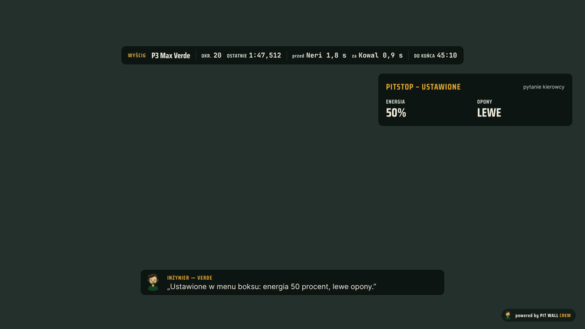
NOWENakładka OBS: karta żółtej flagi domyślnie tylko w wyścigu.
NOWESpotter: przypomnienie „three wide” innymi słowami; „three wide” od razu, gdy dochodzi trzecie auto.
POPRAWKAiRacing: pitstop głosem – drugie polecenie z rzędu nie kończy się już „gra nie potwierdziła zmian”.
POPRAWKAiRacing, Assetto Corsa: raport z jazdy od razu po powrocie do boksu, bez okrążenia wyjazdowego.
POPRAWKAiRacing, wyścig na czas: po upływie czasu inżynier nie każe już zjeżdżać do boksu na ostatnim okrążeniu.
POPRAWKAiRacing: odstęp do rywala tuż po linii mety bez zaniżenia („pilnuj” mówił 1,4 s zamiast 2,6 s).
POPRAWKAiRacing: „start z siódmego rzędu” zamiast „z siódmy rzędu”.
POPRAWKARaport z jazdy przy stałym setupie: zakręty „to auto” nie odsyłają już do pustej karty setupu.
POPRAWKALinia jazdy: kręty tor bez długich prostych dzielony na kilka sekcji, nie jedną.
POPRAWKAiRacing: okrążenie z incydentem nie jest czyste ani najlepsze – jak w grze.
POPRAWKARaport z jazdy: karta opon tylko wtedy, gdy gra o nich coś podała.
POPRAWKANakładka OBS: nazwa widza z YouTube bez podwójnego „@”.
POPRAWKAWyścig na czas: okrążenia do mety liczone od mety lidera – plan nie mówi „1 okrążenie”, gdy zostały dwa.
POPRAWKAPo mecie: bez planu „do mety” i bez odprawy dla zmiennika; plan na pit wallu bez powtórzonego zdania.
POPRAWKATrening i kwalifikacje: bez „zjeżdżaj do boksu” przez energię, gdy sesja się kończy.
POPRAWKASpotter: o aucie, które właśnie odjeżdża, nie mówi już „dalej z lewej” ani „Two wide” – od razu „czysto”.
POPRAWKALMU: powrót do garażu nie jest już liczony jako kara za limity toru.
POPRAWKAPo fladze dla lidera: bez odstępu do aut, które są już na mecie.
POPRAWKANakładka OBS: żółta flaga nie wyskakuje w garażu, przed startem i po mecie.
POPRAWKANakładka OBS: po mecie pasek pokazuje wynik; „do lidera” w treningu i kwalifikacjach to strata najlepszego okrążenia.
POPRAWKANakładka OBS: najlepsze okrążenie z właściwym numerem i bez porównania ze startowym; pojedynek bez „okr. 0”.
Wersja 0.4.6.1 (26.11.2026)
NOWEiRacing: inżynier, spotter i pit wall – paliwo, strategia, rywale, pogoda, flagi i raport z jazdy.
NOWEiRacing: pitstop głosem, szacunek iRatingu, odliczanie do stanowiska i raport z telemetrii (.ibt).
NOWEiRacing, owale: balans w każdej fazie zakrętu i rada, co zmienić w setupie.
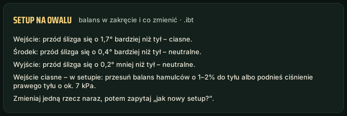
NOWELinia jazdy w raporcie z jazdy i u trenera („jak moja linia w T5?”).
NOWERaport z jazdy w Twoich jednostkach.
NOWEPrzypomnienia na zdarzenie: zjazd, deszcz, ostatnie okrążenie – też z pit walla.
NOWEPaliwo: „zatankuj do mety” i gdzie zdejmować gaz, żeby oszczędzać.
NOWEPo drugim wyjeździe z tej samej przyczyny rada: ABS, TC albo balans hamulców.
NOWESpotter w dźwięku przestrzennym (opcja).
NOWEPit wall: wykres kierownicy w porównaniu okrążeń i podpowiedź zmiany zmęczonego kierowcy.
NOWENowa Pomoc: pierwsze kroki dla każdej gry, instrukcja z szukaniem i „Sprawdź wszystko”.
NOWENakładka OBS: gotowe ustawienia paska i adresy wszystkich układów.
NOWEInstalator w 7 językach.
POPRAWKASpotter spokojniejszy, mniej powtarzanych ostrzeżeń.
POPRAWKAInżynier lepiej rozumie pytania i nie reaguje na przypadkowe zdania.
POPRAWKAMniej zbędnych rad o paliwie, nagumowaniu i ciśnieniach.
POPRAWKA„Pitlane” zamiast „aleja”.
POPRAWKAOkno: gładkie kształty, czytelna mapka zakrętu, statusy w wąskim oknie.
POPRAWKAWszystkie komunikaty przetłumaczone także bez klucza Groq.
POPRAWKAStrona „Nakładka OBS” znów się przewija – widać wszystkie ustawienia.
Wersja 0.4.5.1 (23.11.2026)
NOWENakładka OBS: własny układ elementów dla każdej sceny, wygląd ustawiany w oknie.

NOWENakładka OBS: wieża klasy, karty zdarzeń i komendy widzów z czatu Twitcha.
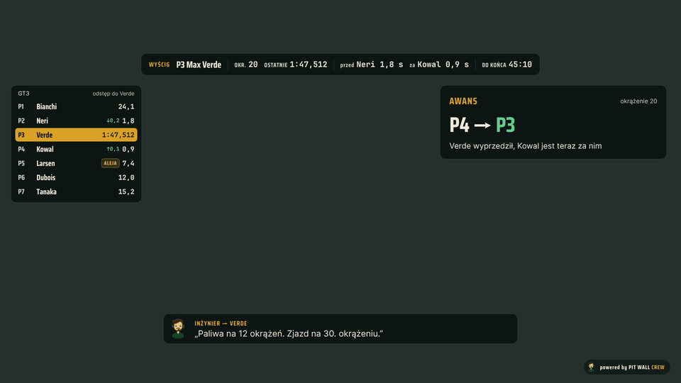
NOWEStrona „Nakładka OBS” z opisem i 5 krokami na start.

NOWEPorównanie aut w funkcjach eksperymentalnych, z czasem pitstopów; głosem „które auto lepsze?”.
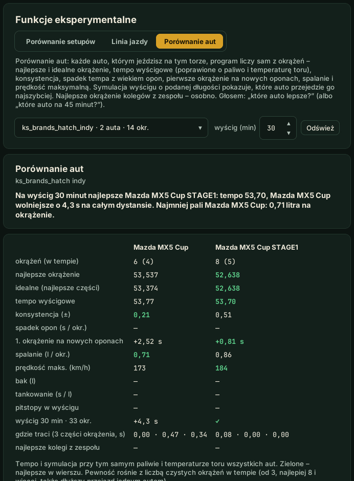
NOWERada o oponach liczy, że nowe zimne opony są na początku wolniejsze.
NOWEInżynier odpowiada na „jak uszkodzenia silnika?”.
NOWEAssetto Corsa z CSP: przód i tył na granicy przyczepności prosto z danych opon gry.
POPRAWKACiśnienia: krótka rada, rzadziej, w wyścigu tylko przed pitstopem.
POPRAWKA„Zapisz setup” zapisuje też ciśnienia i rady z raportu.
POPRAWKAWczytanie innego setupu nie daje już fałszywych ostrzeżeń.
POPRAWKADługi łuk (np. Paddock Hill) to jeden zakręt.
POPRAWKAPit wall: poprawki tabeli rywali, wykresu pozycji i mapy porównania okrążeń.
POPRAWKA„Połącz z zespołem” od razu uruchamia inżyniera z nowym zespołem.
POPRAWKAOkno w innych językach: poprawna forma przy liczbie 1 (np. „1 lap”, nie „1 laps”).
Wersja 0.4.5.0 (22.11.2026)
NOWELinia jazdy (wersja próbna, pełna wersja): każda sekcja toru z góry – Twoja linia na tle najlepszej (Twojej albo kolegi z zespołu) i rady, gdzie jechać inaczej.

NOWENakładka OBS dla streamerów: pasek i karty z danymi auta, mini-mapa klasy, pojedynek (kto kogo dogoni i w którym stincie); widzowie pytają z czatu YouTube.

NOWENakładka działa też, gdy jedzie kolega z zespołu; ustawienia na stronie „Nakładka OBS” w oknie.
NOWENa mecie inżynier chwali cały zespół: najszybsze okrążenie i najrówniejsza jazda; nakładka OBS pokazuje kartę „META”.

NOWELimity toru z podziałem na kierowców auta – głosem i na nakładce.

NOWEPit wall: wykres pozycji całej klasy, linie jazdy kierowców w porównaniu okrążeń, „plan nieaktualny” i wiek opon rywali.
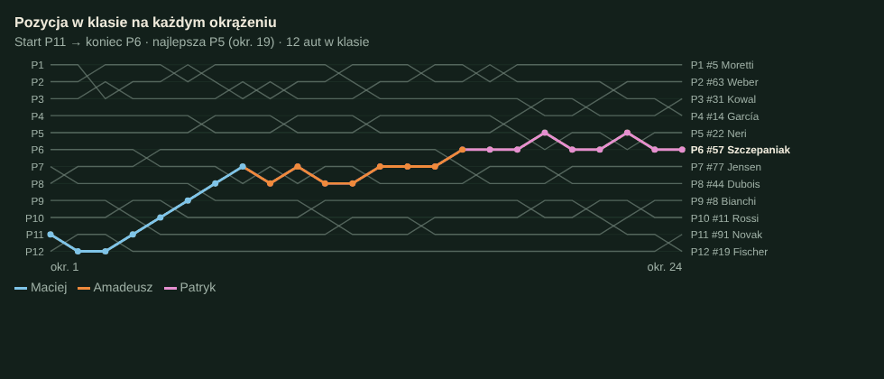
NOWEPit wall otwarty z programu pyta, zanim przełączy przeglądarkę na inny zespół; nazwa zespołu jest u góry.
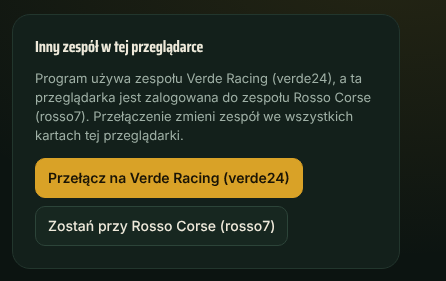
NOWEPit wall „Na żywo”: ostatni stan auta, gdy nikt nie jedzie.
NOWEGrafik: godzina w grze obok prawdziwej, noc liczona z godziny w grze.
NOWETest mikrofonu z odsłuchem: po nagraniu słyszysz siebie i widzisz, co zrozumiał inżynier.
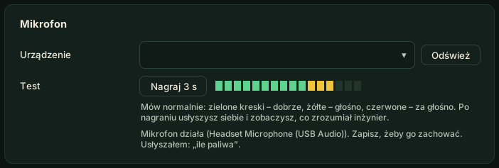
NOWE„Pierwsze kroki” odhaczają to, co już ustawione.
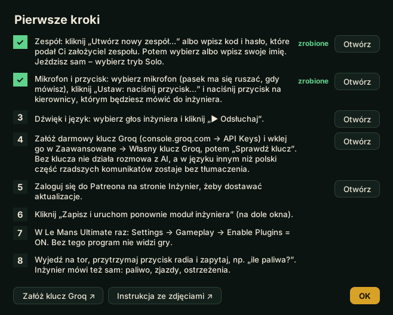
NOWENowe pytania: ostatni pitstop, postoje i wiek opon rywala, średnia z ostatnich okrążeń, „jak jedzie Amadeusz w T5?”, „ile razy wyjechałem poza tor?”, „czy jadę za ostro?”, „ile okrążeń przejedziemy?”.
NOWEGłosem: „przypomnij mi za 5 okrążeń, żeby…” i „pitstop za 12 okrążeń”.
NOWEZmiana kierowcy głosem krócej: „kierowca Stawicki”, także razem z paliwem i oponami.
NOWE„Pojedynek z Kowalskim” działa jak „pilnuj Kowalskiego”; komendę podpowiadają okno i nakładka OBS.
NOWEOstrzeżenia o dublowaniu „tylko przed hamowaniem”.

NOWEPiknięcia przy „naciśnij, mów, naciśnij” (można wyciszyć).

NOWEInżynier mówi, gdy zmienia się nagumowanie toru.
POPRAWKATemperatura hamulców w LMU w °C (była ok. 270° za wysoka).
POPRAWKAFair share: okrążenia kolegów z czasu, gdy program nie widział auta, nie trafiają już do kierowcy, który wsiadł.
POPRAWKAFair share liczy też kierowcę, który jeździ bez programu (z grafiku zespołu).
POPRAWKAPitstop zmierzony od połowy (przejęcie auta w boksie) nie psuje już czasów pitstopu w planie.
POPRAWKAOdprawa po przejęciu auta czeka do końca tankowania i podaje stan po serwisie.
POPRAWKAOdprawa dla następnego kierowcy: plan do mety liczony po tankowaniu.
POPRAWKAPorównanie okrążeń: dokładna strata, bez fałszywej straty na starcie.
POPRAWKANajlepsze okrążenie bez czasu skasowanego za limity toru.
POPRAWKALepsze rozpoznawanie mowy: nazwiska po brzmieniu, „Opony.” jako pytanie, więcej słów zamiast „pilnuj”.
POPRAWKAPo samym „pilnuj” inżynier pyta o nazwisko; rozumie też nazwisko przeliterowane.
POPRAWKA„Przestań pilnować” i „bez pilnowania” działają od razu, bez AI.
POPRAWKA„Ustaw paliwo na 80” ustawia tankowanie; AI nie ustawi tankowania, gdy o nim nie mówisz.
POPRAWKAAI: zdanie tłumacza o sobie nie jest już brane za słowa kierowcy.
POPRAWKAKomunikaty: sektor porządkowo, liczby z przecinkiem, rzadsze rady z okrążenia kolegi i ostrzeżenia o dublowaniu.
POPRAWKAInne języki: odpowiedzi, odprawy przy zmianie kierowcy, rady z okrążenia kolegi i ostrzeżenie o fair share przetłumaczone także bez klucza Groq.
POPRAWKAPit wall: fair share całego zespołu, pełna lista kierowców w planie stintów, auta na mapie bez cofania.
POPRAWKAOkno: wyczyszczone pole „Stint” nie wraca do starej wartości.
POPRAWKAŻeton „Zespół” w oknie pokazuje wprost połączenie i kierowcę.
POPRAWKASpotter: po „three wide” od razu mówi „two wide” i stronę rywala.
POPRAWKAInne języki: odpowiedzi AI zawsze w języku kierowcy (zdarzały się po polsku).
POPRAWKACzat YouTube: komendy widzów trafiają na ekran po 1–2 s (jedno połączenie zamiast odpytywania).
POPRAWKAZamknięcie systemu Windows nie jest już zgłaszane jako awaria inżyniera.
Wersja 0.4.4.12 (20.11.2026)
POPRAWKAMapka toru w raporcie: szykany (np. pierwsza na Monzy) mają prawdziwy kształt po jednym czystym okrążeniu.
Wersja 0.4.4.11 (20.11.2026)
NOWEFunkcje eksperymentalne (testerzy): karta „Test setupu” – A/B z poprawką na paliwo i opony, zakręty, zużycie opon, balans; głosem „testuję nowy setup”.

POPRAWKAInżynier rozumie więcej pytań, także w innych językach: „ile do trzeciego?”, „limity toru?”, „co z fast bump?”, „ustaw 15 litrów”, „czy mnie słyszysz?”.
POPRAWKAGdy inżynier nie zrozumie pytania, mówi to w języku kierowcy.
POPRAWKA„Pilnuj …” na treningu i w kwalifikacjach porównuje ostatnie okrążenia.
POPRAWKA„Jak opony?” po pitstopie mówi tylko o nowych oponach.
POPRAWKAOcena zmiany po radzie o tarkach i dobijaniu jest konkretna.
POPRAWKAMonza: numery zakrętów jak na mapie w kokpicie; łuk w pełnym gazie nie jest zakrętem.
POPRAWKAPytania o raport z jazdy: inżynier zna też hamulce i ciśnienia opon.
POPRAWKAPit wall: poprawki z przeglądu kodu (dopisywanie kierowców, mapa toru, eksport CSV).
Wersja 0.4.4.10 (16.11.2026)
POPRAWKAPorsche 911 GT3 R (LMU): rady do amortyzatorów w dobrą stronę – 1 to najtwardsze, 18 najmiększe.
Wersja 0.4.4.9 (16.11.2026)
NOWEGłośność głosem: „głośniej” / „ciszej” i „spotter głośniej” / „spotter ciszej”; osobny suwak głośności spottera.
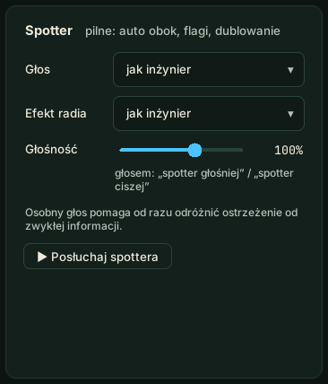
POPRAWKAAssetto Corsa: rada o ciśnieniu mówi, które koło (lewa / prawa), gdy się różnią.
Wersja 0.4.4.8 (15.11.2026)
POPRAWKAAssetto Corsa: mapka toru w raporcie z jazdy znów się pokazuje.
Wersja 0.4.4.7 (15.11.2026)
NOWERaport z jazdy, karta „Paliwo” / „Energia”: także najwięcej zużyte na jednym okrążeniu (przy energii też paliwo).
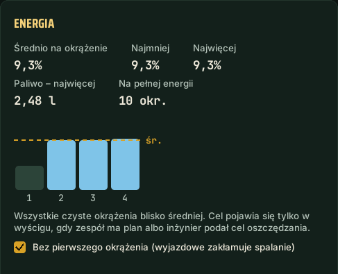
POPRAWKAPasek bez tekstu pod „Komunikaty” po pierwszym starcie nowej wersji.
What's new
Changes in the latest Pit Wall Crew versions.
Version 0.4.6.2 (26.11.2026)
NEWLMU: track limits as in the game – fractions of a point in the race, “that lap doesn't count” in practice and qualifying.
NEWQualifying: after each lap, time, position in class and gap to first place; at the end – position.
NEWOBS overlay: a pit stop set by voice shows a card with what was set.
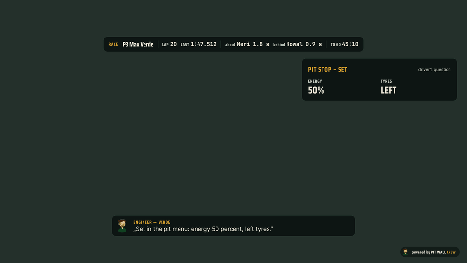
NEWOBS overlay: the yellow flag card is shown by default only in the race.
NEWSpotter: a “three wide” reminder worded differently each time; “Three wide” straight away when a third car comes alongside.
FIXiRacing: voice pitstop – a second command in a row no longer ends with “the game did not confirm the changes”.
FIXiRacing, Assetto Corsa: drive report right after returning to the pit, without an out-lap.
FIXiRacing, timed race: once time runs out, the engineer no longer tells you to pit on the last lap.
FIXiRacing: gap to a rival just after the finish line, without understating it (“watch” said 1.4 s instead of 2.6 s).
FIXiRacing: the engineer now says “start from row 7” correctly.
FIXDrive report with a fixed setup: corners “this car” no longer point to an empty setup card.
FIXRacing line: a twisty track with no long straights is split into several sections, not one.
FIXiRacing: a lap with an incident is neither clean nor best – as in the game.
FIXDrive report: the tyre card appears only when the game has provided tyre data.
FIXOBS overlay: YouTube viewer name without a double “@”.
FIXTimed race: laps to the finish are counted from the leader's finish – the plan no longer says “1 lap” when two are left.
FIXAfter the finish: no “to the finish” plan and no handover brief for the next driver; the Pit Wall plan without a repeated sentence.
FIXPractice and qualifying: no “box this lap” over energy when the session is ending.
FIXSpotter: for a car that is just pulling away it no longer says “still left” or “Two wide” – it goes straight to “clear”.
FIXLMU: returning to the garage is no longer counted as a track limits penalty.
FIXAfter the leader takes the flag: no gap shown to cars that have already finished.
FIXOBS overlay: the yellow flag no longer pops up in the garage, before the start or after the finish.
FIXOBS overlay: after the finish the bar shows the result; “to leader” in practice and qualifying is the gap to the best lap.
FIXOBS overlay: best lap with the right lap number and no comparison with the opening lap; the duel without “lap 0”.
Version 0.4.6.1 (26.11.2026)
NEWiRacing: engineer, spotter and Pit Wall, covering fuel, strategy, rivals, weather, flags and the driving report.
NEWiRacing: voice pitstop, iRating estimate, countdown to your pit box and telemetry report (.ibt).
NEWiRacing, ovals: balance in every phase of a corner and advice on what to change in the setup.
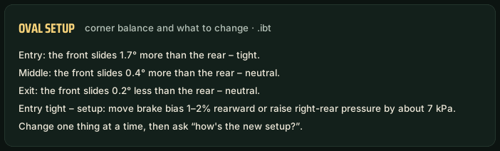
NEWRacing line in the driving report and with the coach ("how's my line in T5?").
NEWDriving report in your units.
NEWEvent reminders for pit entry, rain and the last lap, also from the Pit Wall.
NEWFuel: "fuel to the finish" and where to lift off to save fuel.
NEWAfter a second off for the same reason, advice on ABS, TC or brake balance.
NEWSpotter in 3D sound (optional).
NEWPit Wall: steering chart in the lap comparison and a hint to swap a tired driver.
NEWNew Help: first steps for every game, manual with search and "Check all".
NEWOBS overlay: ready-made bar settings and addresses for all layouts.
NEWInstaller in 7 languages.
FIXSpotter is calmer, with fewer repeated warnings.
FIXEngineer understands questions better and ignores stray remarks.
FIXFewer unnecessary tips on fuel, track rubber and pressures.
FIXClearer pit lane messages.
FIXWindow: smoother shapes, a readable corner map and statuses in a narrow window.
FIXAll messages are translated, even without a Groq key.
FIXThe “OBS overlay” page scrolls again – all settings are visible.
Version 0.4.5.1 (23.11.2026)
NEWOBS overlay: your own element layout for each scene, look set in the window.

NEWOBS overlay: class tower, event cards and viewer commands from Twitch chat.

NEW“OBS overlay” page with a description and 5 steps to start.
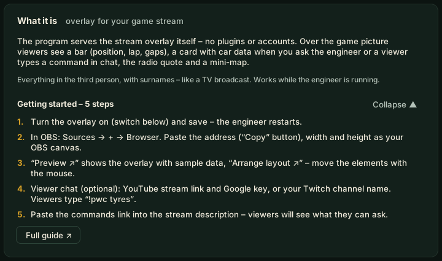
NEWCar comparison in experimental features, with pit stop time; by voice “which car is better?”.

NEWTyre advice counts that new cold tyres are slower at first.
NEWThe engineer answers “how is the engine damage?”.
NEWAssetto Corsa with CSP: front and rear at the grip limit straight from the game's tyre data.
FIXPressures: short advice, less often, in the race only before a pit stop.
FIX“Save setup” also saves the pressures and the report advice.
FIXLoading another setup no longer gives false warnings.
FIXA long bend (e.g. Paddock Hill) is one corner.
FIXPit wall: fixes to the rivals table, position chart and lap-comparison map.
FIX“Connect to team” restarts the engineer with the new team right away.
FIXWindow: correct singular with the number 1 (e.g. “1 lap”, not “1 laps”).
Version 0.4.5.0 (22.11.2026)
NEWDriving line (trial version, full version): every track section from above – your line against the best one (yours or a teammate's) and advice on where to drive differently.
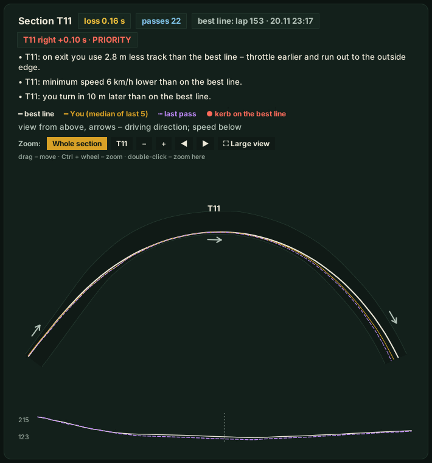
NEWOBS overlay for streamers: bar and cards with car data, class mini-map, duel (who catches whom and in which stint); viewers ask from the YouTube chat.

NEWThe overlay also works when a teammate is driving; settings on the “OBS overlay” page in the window.
NEWAt the finish the engineer praises the whole team: fastest lap and most consistent driving; the OBS overlay shows a “FINISH” card.

NEWTrack limits split by the car's drivers – by voice and on the overlay.

NEWPit Wall: position chart of the whole class, drivers' racing lines in the lap comparison, “plan outdated” and rivals' tyre age.

NEWThe Pit Wall opened from the program asks before switching the browser to another team; the team name is shown at the top.

NEWPit Wall “Live”: the car's last state when nobody is driving.
NEWSchedule: in-game time next to real time, night counted from in-game time.
NEWMicrophone test with playback: after the recording you hear yourself and see what the engineer understood.

NEW“First steps” tick off what is already set up.

NEWNew questions: last pit stop, a rival's stops and tyre age, average of recent laps, “how is Amadeusz doing in T5?”, “how many times did I go off track?”, “am I overdriving?”, “how many laps will the race be?”.
NEWBy voice: “remind me in 5 laps to…” and “pit stop in 12 laps”.
NEWShorter driver change by voice: “driver Smith”.
NEW“Duel with Smith” works like “watch Smith”; the window and the OBS overlay show the command.
NEWLapping warnings “only before braking”.
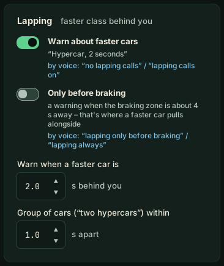
NEWBeeps for “press, speak, press” (can be muted).
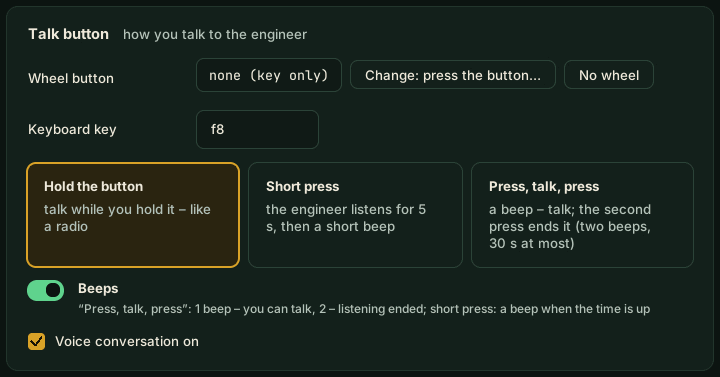
NEWThe engineer says when the track rubber changes.
FIXLMU brake temperatures in °C (were about 270° too high).
FIXFair share: teammates' laps from the time the program was not watching the car no longer go to the driver who got in.
FIXFair share also counts a driver who doesn't use the program (from the team schedule).
FIXA pit stop measured from the middle (taking over the car in the pits) no longer spoils pit stop times in the plan.
FIXThe briefing after taking over the car waits for refuelling to finish and gives the state after service.
FIXBriefing for the next driver: the plan to the finish is calculated after refuelling.
FIXLap comparison: exact loss, no false loss at the start.
FIXBest lap without a time deleted for track limits.
FIXBetter speech recognition: names by sound, “Tyres.” as a question, more words instead of “watch”.
FIXAfter “watch” alone the engineer asks for the surname; a spelled-out surname is understood too.
FIX“Stop watching” works straight away, without AI.
FIX“Set fuel to 80” sets refuelling; the AI no longer sets refuelling when you did not mention it.
FIXAI: the translator's sentence about itself is no longer taken as the driver's words.
FIXMessages: ordinal sectors, decimal commas, rarer advice from a teammate's lap and lapping warnings.
FIXOther languages: answers, driver-change briefings, tips from a teammate's lap and the fair share warning are translated also without a Groq key.
FIXPit Wall: fair share for the whole team, full driver list in the stint plan, cars on the map no longer jump back.
FIXWindow: a cleared “Stint” field no longer returns to the old value.
FIXThe “Team” chip in the window clearly shows the connection and the driver.
FIXSpotter: after “three wide” it immediately calls “two wide” and the rival's side.
FIXOther languages: AI answers always in the driver's language (some came out in Polish).
FIXYouTube chat: viewer commands reach the screen in 1–2 s (one connection instead of polling).
FIXShutting down Windows is no longer reported as an engineer crash.
Version 0.4.4.12 (20.11.2026)
FIXTrack map in the report: chicanes (e.g. the first one at Monza) get their real shape after one clean lap.
Version 0.4.4.11 (20.11.2026)
NEWExperimental features (testers): “Setup test” card – A/B corrected for fuel and tyres, corners, tyre wear, balance; by voice “I'm testing a new setup”.

FIXThe engineer understands more questions, in other languages too: “how far is third?”, “track limits?”, “what about fast bump?”, “set 15 litres”, “can you hear me?”.
FIXWhen the engineer doesn't understand a question, he says so in the driver's language.
FIX“Watch …” in practice and qualifying compares last laps.
FIX“How are the tyres?” after a pitstop talks only about the new tyres.
FIXThe verdict on a change after kerb and bottoming advice is specific.
FIXMonza: corner numbers match the cockpit map; a bend taken flat out is not a corner.
FIXDriving report questions: the engineer also knows brakes and tyre pressures.
FIXPit Wall: fixes from the code review (adding drivers, track map, CSV export).
Version 0.4.4.10 (16.11.2026)
FIXPorsche 911 GT3 R (LMU): damper advice goes the right way – 1 is the stiffest, 18 the softest.
Version 0.4.4.9 (16.11.2026)
NEWVolume by voice: “louder” / “quieter” and “spotter louder” / “spotter quieter”; a separate spotter volume slider.

FIXAssetto Corsa: pressure advice says which wheel (left / right) when they differ.
Version 0.4.4.8 (15.11.2026)
FIXAssetto Corsa: the track map in the driving report shows again.
Version 0.4.4.7 (15.11.2026)
NEWDriving report, “Fuel” / “Energy” card: also the most used on a single lap (with energy, fuel too).

FIXBlank bar under “Messages” on the first start of a new version.
Was ist neu
Änderungen in den letzten Versionen von Pit Wall Crew.
Version 0.4.6.2 (26.11.2026)
NEULMU: Track Limits wie im Spiel – Bruchteile von Punkten im Rennen, „Diese Runde zählt nicht“ im Training und Qualifying.
NEUQualifying: nach jeder Runde Zeit, Position in der Klasse und Rückstand auf Platz eins; am Ende – Position.
NEUOBS-Overlay: ein per Sprache eingestellter Pitstop zeigt eine Karte mit dem Eingestellten.
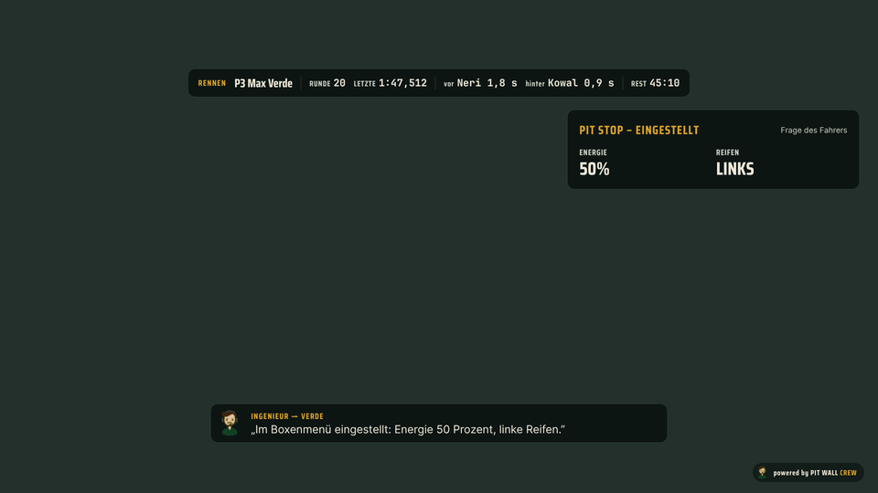
NEUOBS-Overlay: die Karte der Gelben Flagge standardmäßig nur im Rennen.
NEUSpotter: Erinnerung „three wide“ jedes Mal mit anderen Worten; „Three wide“ sofort, wenn ein drittes Auto dazukommt.
KORREKTURiRacing: Pitstop per Sprache – ein zweiter Befehl hintereinander endet nicht mehr mit „Spiel hat die Änderungen nicht bestätigt“.
KORREKTURiRacing, Assetto Corsa: Fahrbericht sofort nach der Rückkehr an die Box, ohne Ausfahrrunde.
KORREKTURiRacing, Zeitrennen: Sobald die Zeit abgelaufen ist, schickt dich der Ingenieur in der letzten Runde nicht mehr an die Box.
KORREKTURiRacing: Abstand zum Rivalen direkt nach der Ziellinie ohne Untertreibung („Im Auge behalten“ sagte 1,4 s statt 2,6 s).
KORREKTURiRacing: Der Ingenieur sagt jetzt richtig „Start aus Reihe 7“.
KORREKTURFahrbericht bei festem Setup: Kurven „dieses Auto“ führen nicht mehr zu einer leeren Setup-Karte.
KORREKTURIdeallinie: Eine kurvenreiche Strecke ohne lange Geraden wird in mehrere Abschnitte statt in einen geteilt.
KORREKTURiRacing: Eine Runde mit Zwischenfall ist weder sauber noch die beste – wie im Spiel.
KORREKTURFahrbericht: Die Reifenkarte erscheint nur, wenn das Spiel Reifendaten geliefert hat.
KORREKTUROBS-Overlay: Name des YouTube-Zuschauers ohne doppeltes „@“.
KORREKTURZeitrennen: Runden bis ins Ziel werden ab dem Ziel des Führenden gezählt – der Plan sagt nicht „1 Runde“, wenn noch zwei übrig sind.
KORREKTURNach dem Ziel: kein Plan „bis ins Ziel“ und kein Übergabe-Briefing für den nächsten Fahrer; Plan an der Pit Wall ohne wiederholten Satz.
KORREKTURTraining und Qualifying: kein „an die Box“ wegen der Energie, wenn die Session endet.
KORREKTURSpotter: Bei einem Auto, das gerade wegzieht, sagt er nicht mehr „noch links“ oder „Two wide“ – sondern gleich „frei“.
KORREKTURLMU: Die Rückkehr in die Garage wird nicht mehr als Strafe wegen Track Limits gezählt.
KORREKTURNach der Zielflagge für den Führenden: kein Abstand zu Autos, die schon im Ziel sind.
KORREKTUROBS-Overlay: Die Gelbe Flagge erscheint nicht in der Garage, vor dem Start und nach dem Ziel.
KORREKTUROBS-Overlay: Nach dem Ziel zeigt die Leiste das Ergebnis; „zum Führenden“ im Training und Qualifying ist der Rückstand auf die beste Runde.
KORREKTUROBS-Overlay: Beste Runde mit der richtigen Nummer und ohne Vergleich mit der Startrunde; das Duell ohne „Rd. 0“.
Version 0.4.6.1 (26.11.2026)
NEUiRacing: Ingenieur, Spotter und Pit Wall, mit Sprit, Strategie, Rivalen, Wetter, Flaggen und Fahrbericht.
NEUiRacing: Boxenstopp per Sprache, iRating-Schätzung, Countdown zu deiner Box und Telemetriebericht (.ibt).
NEUiRacing, Ovale: Balance in jeder Phase der Kurve und Tipp, was du am Setup ändern solltest.

NEUIdeallinie im Fahrbericht und beim Coach („Wie ist meine Linie in T5?“).
NEUFahrbericht in deinen Einheiten.
NEUErinnerungen an Ereignisse wie Boxeneinfahrt, Regen und letzte Runde, auch von der Pit Wall.
NEUSprit: „Bis ins Ziel tanken“ und wo du vom Gas gehen solltest, um zu sparen.
NEUNach dem zweiten Ausrutscher aus demselben Grund ein Tipp zu ABS, TC oder Bremsbalance.
NEUSpotter im Raumklang (optional).
NEUPit Wall: Lenkungsdiagramm im Rundenvergleich und ein Hinweis, einen müden Fahrer auszutauschen.
NEUNeue Hilfe: erste Schritte für jedes Spiel, Anleitung mit Suche und „Alles prüfen“.
NEUOBS-Overlay: fertige Leistenseinstellungen und Adressen aller Layouts.
NEUInstaller in 7 Sprachen.
KORREKTURDer Spotter ist ruhiger, mit weniger wiederholten Warnungen.
KORREKTURDer Ingenieur versteht Fragen besser und reagiert nicht auf zufällige Bemerkungen.
KORREKTURWeniger überflüssige Tipps zu Sprit, Gummierung und Drücken.
KORREKTURKlarere Pit-Lane-Meldungen.
KORREKTURFenster: glattere Formen, lesbare Kurvenkarte und Status im schmalen Fenster.
KORREKTURAlle Meldungen sind auch ohne Groq-Schlüssel übersetzt.
KORREKTURDie Seite „OBS-Overlay“ lässt sich wieder scrollen – alle Einstellungen sind sichtbar.
Version 0.4.5.1 (23.11.2026)
NEUOBS-Overlay: eigenes Layout der Elemente für jede Szene, Aussehen im Fenster einstellbar.
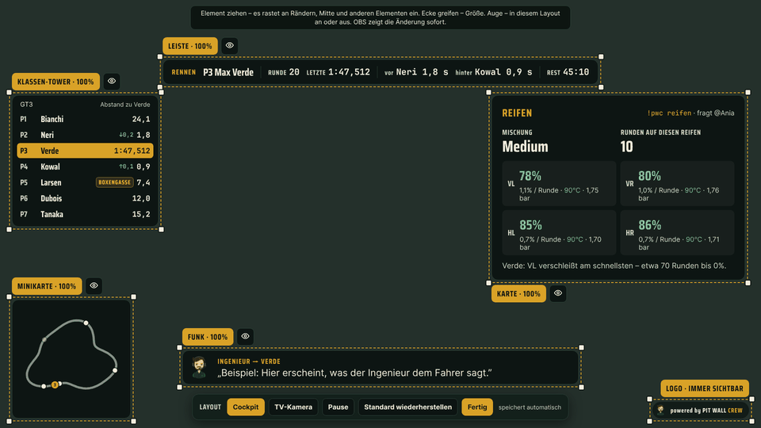
NEUOBS-Overlay: Klassenturm, Ereigniskarten und Zuschauerbefehle aus dem Twitch-Chat.
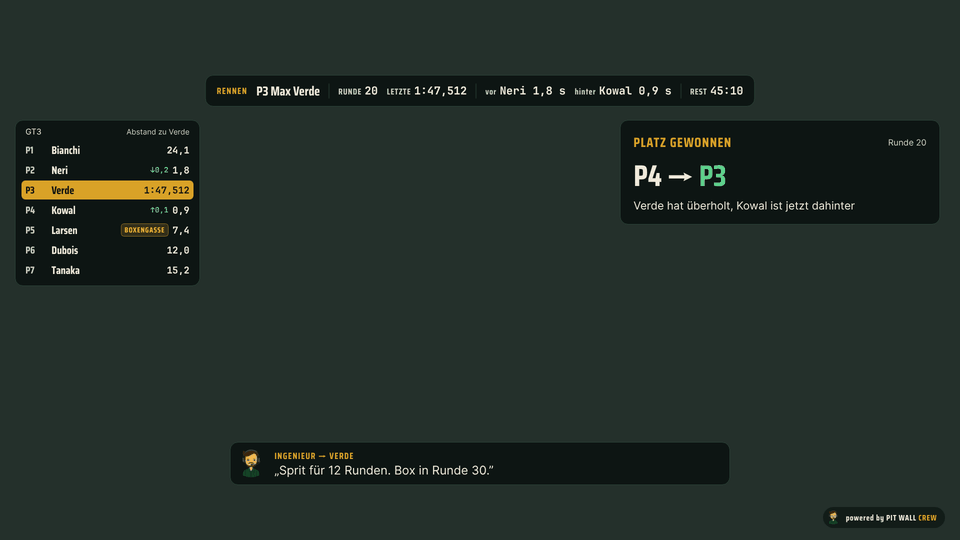
NEUSeite „OBS-Overlay“ mit Beschreibung und 5 Schritten zum Start.
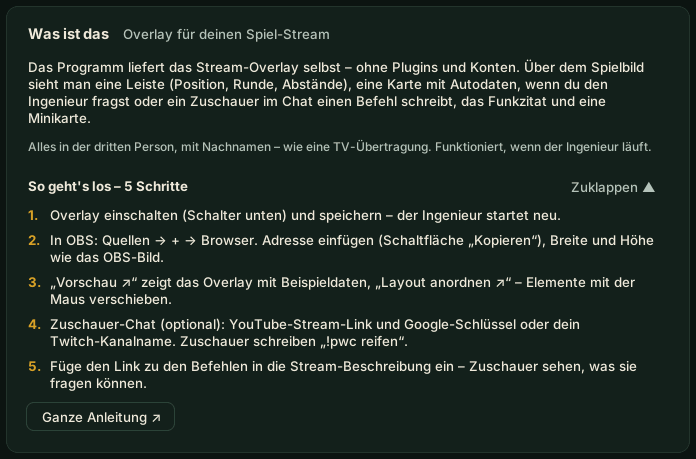
NEUAutovergleich in den experimentellen Funktionen, mit Boxenstoppzeit; per Stimme „welches Auto ist besser?“.

NEUDer Reifenrat berücksichtigt, dass neue kalte Reifen anfangs langsamer sind.
NEUDer Ingenieur beantwortet „wie ist der Motorschaden?“.
NEUAssetto Corsa mit CSP: vorne und hinten an der Haftgrenze direkt aus den Reifendaten des Spiels.
KORREKTURReifendruck: kurzer Rat, seltener, im Rennen nur vor dem Boxenstopp.
KORREKTUR„Setup speichern“ speichert auch Reifendrücke und Ratschläge aus dem Bericht.
KORREKTURDas Laden eines anderen Setups gibt keine falschen Warnungen mehr.
KORREKTUREin langer Bogen (z. B. Paddock Hill) ist eine Kurve.
KORREKTURPitwall: Korrekturen an Gegnertabelle, Positionsgrafik und Karte des Rundenvergleichs.
KORREKTUR„Mit Team verbinden“ startet den Ingenieur sofort mit dem neuen Team.
KORREKTURFenster: richtige Einzahl bei der Zahl 1 (z. B. „1 Runde“ statt „1 Runden“).
Version 0.4.5.0 (22.11.2026)
NEUFahrlinie (Testversion, Vollversion): jeder Streckenabschnitt von oben – deine Linie gegen die beste (deine oder die eines Teamkollegen) und Tipps, wo du anders fahren solltest.
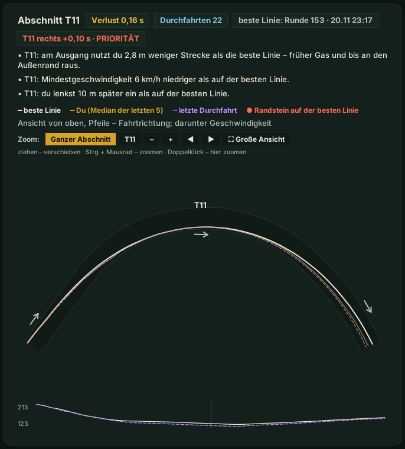
NEUOBS-Overlay für Streamer: Leiste und Karten mit Fahrzeugdaten, Klassen-Minikarte, Duell (wer wen einholt und in welchem Stint); Zuschauer fragen über den YouTube-Chat.

NEUDas Overlay funktioniert auch, wenn ein Teamkollege fährt; Einstellungen auf der Seite „OBS-Overlay“ im Fenster.
NEUIm Ziel lobt der Ingenieur das ganze Team: schnellste Runde und konstanteste Fahrt; das OBS-Overlay zeigt die Karte „ZIEL“.

NEUTrack Limits aufgeteilt nach den Fahrern des Autos – per Stimme und im Overlay.

NEUPit Wall: Positionsdiagramm der ganzen Klasse, Fahrlinien der Fahrer im Rundenvergleich, „Plan veraltet“ und Reifenalter der Gegner.

NEUDie aus dem Programm geöffnete Pit Wall fragt, bevor sie den Browser auf ein anderes Team umstellt; der Teamname steht oben.
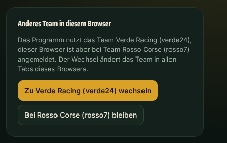
NEUPit Wall „Live“: letzter Stand des Autos, wenn niemand fährt.
NEUFahrerplan: Spielzeit neben der echten Uhrzeit, Nacht nach der Spielzeit.
NEUMikrofontest mit Wiedergabe: Nach der Aufnahme hörst du dich selbst und siehst, was der Ingenieur verstanden hat.

NEU„Erste Schritte“ haken ab, was schon eingerichtet ist.
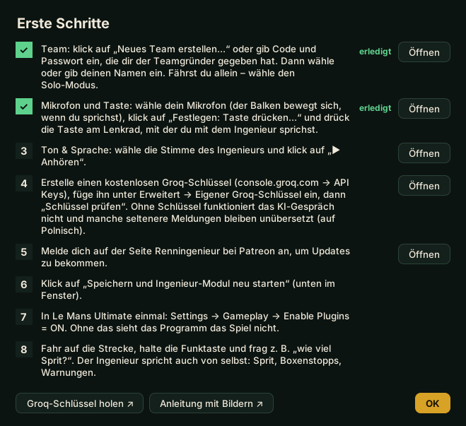
NEUNeue Fragen: letzter Boxenstopp, Stopps und Reifenalter eines Gegners, Schnitt der letzten Runden, „wie fährt Amadeusz in T5?“, „wie oft war ich neben der Strecke?“, „fahre ich zu hart?“, „wie viele Runden hat das Rennen?“.
NEUPer Stimme: „erinnere mich in 5 Runden, dass…“ und „Boxenstopp in 12 Runden“.
NEUFahrerwechsel per Sprache kürzer: „Fahrer Müller“.
NEU„Duell mit Müller“ wirkt wie „beobachte Müller“; Fenster und OBS-Overlay zeigen den Befehl.
NEUÜberrundungswarnungen „nur vor dem Bremsen“.

NEUPieptöne bei „drücken, sprechen, drücken“ (stummschaltbar).

NEUDer Ingenieur sagt, wenn sich der Gummiabrieb auf der Strecke ändert.
KORREKTURBremstemperaturen in LMU in °C (waren etwa 270° zu hoch).
KORREKTURFair Share: Runden der Teamkollegen aus der Zeit, in der das Programm das Auto nicht gesehen hat, gehen nicht mehr an den Fahrer, der eingestiegen ist.
KORREKTURFair Share zählt auch einen Fahrer, der das Programm nicht nutzt (aus dem Stintplan des Teams).
KORREKTUREin ab der Mitte gemessener Boxenstopp (Autoübernahme in der Box) verfälscht die Stoppzeiten im Plan nicht mehr.
KORREKTURDas Briefing nach der Autoübernahme wartet bis zum Ende des Tankens und nennt den Stand nach dem Service.
KORREKTURBriefing für den nächsten Fahrer: Plan bis ins Ziel wird nach dem Tanken berechnet.
KORREKTURRundenvergleich: genauer Verlust, kein falscher Verlust am Start.
KORREKTURBeste Runde ohne wegen Track Limits gestrichene Zeit.
KORREKTURBessere Spracherkennung: Namen nach Klang, „Reifen.“ als Frage, mehr Wörter statt „beobachte“.
KORREKTURNach „beobachte“ allein fragt der Ingenieur nach dem Namen; ein buchstabierter Name wird auch verstanden.
KORREKTUR„Hör auf zu beobachten“ wirkt sofort, ohne KI.
KORREKTUR„Setze Sprit auf 80“ legt die Tankmenge fest; die KI ändert das Tanken nicht mehr, wenn du nicht davon sprichst.
KORREKTURKI: Ein Satz des Übersetzers über sich selbst gilt nicht mehr als Worte des Fahrers.
KORREKTURMeldungen: Sektoren als Ordnungszahl, Dezimalkomma, seltenere Tipps aus der Runde eines Teamkollegen und Überrundungswarnungen.
KORREKTURAndere Sprachen: Antworten, Briefings beim Fahrerwechsel, Tipps aus der Runde des Teamkollegen und die Fair-Share-Warnung sind auch ohne Groq-Schlüssel übersetzt.
KORREKTURPit Wall: Fair Share für das ganze Team, vollständige Fahrerliste im Stintplan, Autos auf der Karte springen nicht zurück.
KORREKTURFenster: ein geleertes Feld „Stint“ springt nicht auf den alten Wert zurück.
KORREKTURDer Chip „Team“ im Fenster zeigt klar die Verbindung und den Fahrer.
KORREKTURSpotter: nach „Three wide“ sagt er sofort „Two wide“ und die Seite des Gegners.
KORREKTURAndere Sprachen: KI-Antworten immer in der Sprache des Fahrers (kamen manchmal auf Polnisch).
KORREKTURYouTube-Chat: Zuschauerbefehle erscheinen nach 1–2 s (eine Verbindung statt Abfragen).
KORREKTURDas Herunterfahren von Windows wird nicht mehr als Absturz des Ingenieurs gemeldet.
Version 0.4.4.12 (20.11.2026)
KORREKTURStreckenkarte im Bericht: Schikanen (z. B. die erste in Monza) haben nach einer sauberen Runde ihre echte Form.
Version 0.4.4.11 (20.11.2026)
NEUExperimentelle Funktionen (Tester): Karte „Setup-Test“ – A/B bereinigt um Kraftstoff und Reifen, Kurven, Reifenverschleiß, Balance; per Stimme „ich teste ein neues Setup“.

KORREKTURDer Ingenieur versteht mehr Fragen, auch in anderen Sprachen: „wie weit ist der Dritte?“, „Track Limits?“, „was ist mit Fast Bump?“, „15 Liter einstellen“, „hörst du mich?“.
KORREKTURVersteht der Ingenieur eine Frage nicht, sagt er es in der Sprache des Fahrers.
KORREKTUR„Beobachte …“ in Training und Qualifying vergleicht die letzten Runden.
KORREKTUR„Wie sind die Reifen?“ nach dem Boxenstopp spricht nur über die neuen Reifen.
KORREKTURDie Bewertung einer Änderung nach dem Rat zu Randsteinen und Aufsetzen ist konkret.
KORREKTURMonza: Kurvennummern wie auf der Cockpit-Karte; ein Bogen mit Vollgas ist keine Kurve.
KORREKTURFragen zum Fahrbericht: Der Ingenieur kennt auch Bremsen und Reifendrücke.
KORREKTURPit Wall: Korrekturen aus dem Code-Review (Fahrer hinzufügen, Streckenkarte, CSV-Export).
Version 0.4.4.10 (16.11.2026)
KORREKTURPorsche 911 GT3 R (LMU): Dämpfer-Tipps in die richtige Richtung – 1 ist am härtesten, 18 am weichsten.
Version 0.4.4.9 (16.11.2026)
NEULautstärke per Stimme: „lauter“ / „leiser“ und „Spotter lauter“ / „Spotter leiser“; eigener Lautstärkeregler für den Spotter.
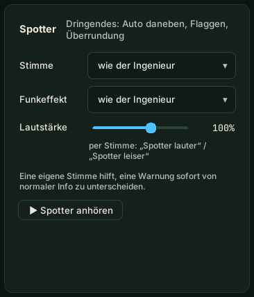
KORREKTURAssetto Corsa: Druckhinweis nennt das Rad (links / rechts), wenn sie sich unterscheiden.
Version 0.4.4.8 (15.11.2026)
KORREKTURAssetto Corsa: Die Streckenkarte im Fahrbericht wird wieder angezeigt.
Version 0.4.4.7 (15.11.2026)
NEUFahrbericht, Karte „Kraftstoff“ / „Energie“: auch der höchste Verbrauch auf einer Runde (bei Energie auch Kraftstoff).

KORREKTURLeerer Balken unter „Meldungen“ beim ersten Start einer neuen Version.
Nouveautés
Changements des dernières versions de Pit Wall Crew.
Version 0.4.6.2 (26.11.2026)
NOUVEAULMU : limites de piste comme dans le jeu – fractions de point en course, « ce tour ne compte pas » aux essais et en qualifications.
NOUVEAUQualifications : après chaque tour, temps, position dans la catégorie et écart avec la première place ; à la fin – position.
NOUVEAUOverlay OBS : un pit stop réglé à la voix affiche une carte avec les réglages.
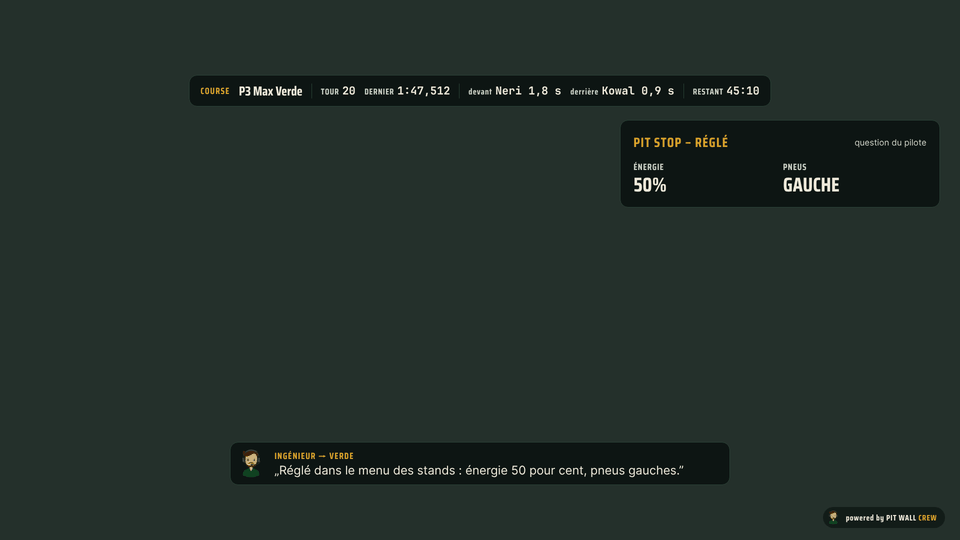
NOUVEAUOverlay OBS : la carte du drapeau jaune n’apparaît par défaut qu’en course.
NOUVEAUSpotter : rappel « three wide » formulé chaque fois autrement ; « Three wide » tout de suite quand une troisième voiture arrive.
CORRECTIONiRacing : pitstop vocal – une deuxième commande d’affilée ne se termine plus par « le jeu n’a pas confirmé les changements ».
CORRECTIONiRacing, Assetto Corsa : rapport de conduite dès le retour au stand, sans tour de sortie.
CORRECTIONiRacing, course à temps : une fois le temps écoulé, l’ingénieur ne te demande plus de rentrer au stand au dernier tour.
CORRECTIONiRacing : écart avec un rival juste après la ligne d’arrivée, sans le minimiser (« surveille » disait 1,4 s au lieu de 2,6 s).
CORRECTIONiRacing : l’ingénieur dit maintenant correctement « départ depuis la 7e ligne ».
CORRECTIONRapport de conduite avec un setup fixe : les virages « cette voiture » ne renvoient plus vers une fiche de setup vide.
CORRECTIONLigne de course : un tracé sinueux sans longues lignes droites est découpé en plusieurs sections, pas en une seule.
CORRECTIONiRacing : un tour avec incident n’est ni propre ni le meilleur – comme dans le jeu.
CORRECTIONRapport de conduite : la fiche des pneus n’apparaît que si le jeu a fourni des données sur les pneus.
CORRECTIONOverlay OBS : nom du spectateur YouTube sans double « @ ».
CORRECTIONCourse à temps : les tours jusqu’à l’arrivée sont comptés depuis l’arrivée du leader – le plan ne dit plus « 1 tour » quand il en reste deux.
CORRECTIONAprès l’arrivée : pas de plan « jusqu’à l’arrivée » ni de briefing de relais pour le pilote suivant ; plan sur le Pit Wall sans phrase répétée.
CORRECTIONEssais et qualifications : pas de « rentre au stand » à cause de l’énergie quand la session se termine.
CORRECTIONSpotter : pour une voiture en train de s’éloigner, il ne dit plus « toujours à gauche » ni « Two wide » – directement « libre ».
CORRECTIONLMU : le retour au garage n’est plus compté comme une pénalité pour limites de piste.
CORRECTIONAprès le drapeau à damier du leader : pas d’écart avec les voitures déjà arrivées.
CORRECTIONOverlay OBS : le drapeau jaune ne s’affiche plus au garage, avant le départ ni après l’arrivée.
CORRECTIONOverlay OBS : après l’arrivée, la barre affiche le résultat ; « au leader » aux essais et aux qualifications correspond à l’écart au meilleur tour.
CORRECTIONOverlay OBS : meilleur tour avec le bon numéro et sans comparaison avec le tour de départ ; duel sans « tour 0 ».
Version 0.4.6.1 (26.11.2026)
NOUVEAUiRacing : ingénieur, spotter et pit wall, avec carburant, stratégie, rivaux, météo, drapeaux et rapport de conduite.
NOUVEAUiRacing : arrêt au stand à la voix, estimation d'iRating, compte à rebours vers votre place et rapport de télémétrie (.ibt).
NOUVEAUiRacing, ovales : équilibre à chaque phase du virage et conseil sur ce qu'il faut changer dans le réglage.
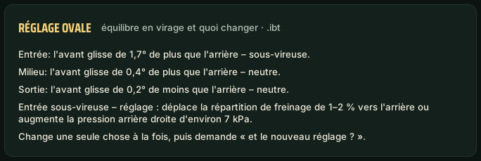
NOUVEAUTrajectoire dans le rapport de conduite et chez le coach (« comment est ma trajectoire en T5 ? »).
NOUVEAURapport de conduite dans vos unités.
NOUVEAURappels d'événements pour l'entrée aux stands, la pluie et le dernier tour, aussi depuis le pit wall.
NOUVEAUCarburant : « faire le plein jusqu'à l'arrivée » et où lever le pied pour économiser.
NOUVEAUAprès une seconde sortie de piste pour la même raison, conseil sur l'ABS, le TC ou l'équilibre de freinage.
NOUVEAUSpotter en son spatial (option).
NOUVEAUPit wall : graphique du volant dans la comparaison des tours et conseil pour remplacer un pilote fatigué.
NOUVEAUNouvelle aide : premières étapes pour chaque jeu, notice avec recherche et « Tout vérifier ».
NOUVEAUOverlay OBS : réglages de barre prêts à l'emploi et adresses de toutes les mises en page.
NOUVEAUProgramme d'installation en 7 langues.
CORRECTIONLe spotter est plus calme, avec moins d'avertissements répétés.
CORRECTIONL'ingénieur comprend mieux les questions et ignore les remarques anodines.
CORRECTIONMoins de conseils inutiles sur le carburant, le gommage et les pressions.
CORRECTIONMessages pit lane plus clairs.
CORRECTIONFenêtre : formes lissées, carte de virage lisible et statuts dans une fenêtre étroite.
CORRECTIONTous les messages sont traduits, même sans clé Groq.
CORRECTIONLa page « Overlay OBS » défile de nouveau – tous les réglages sont visibles.
Version 0.4.5.1 (23.11.2026)
NOUVEAUOverlay OBS : disposition propre des éléments pour chaque scène, apparence réglée dans la fenêtre.
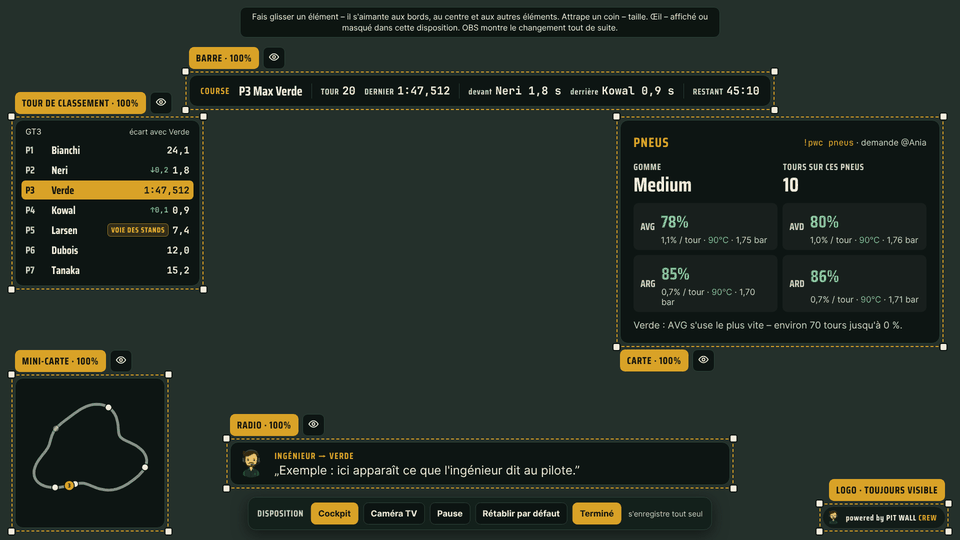
NOUVEAUOverlay OBS : tour de classe, cartes d'événements et commandes des spectateurs du chat Twitch.
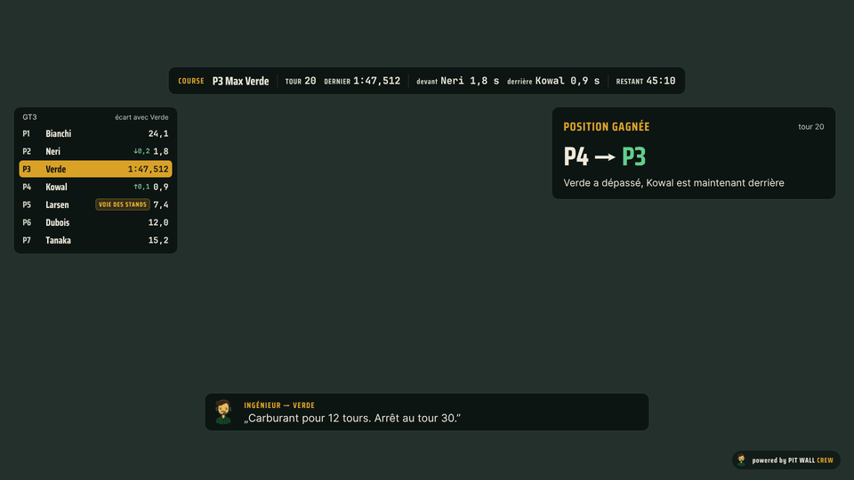
NOUVEAUPage « Overlay OBS » avec une description et 5 étapes pour démarrer.

NOUVEAUComparaison de voitures dans les fonctions expérimentales, avec le temps des arrêts ; à la voix « quelle voiture est meilleure ? ».
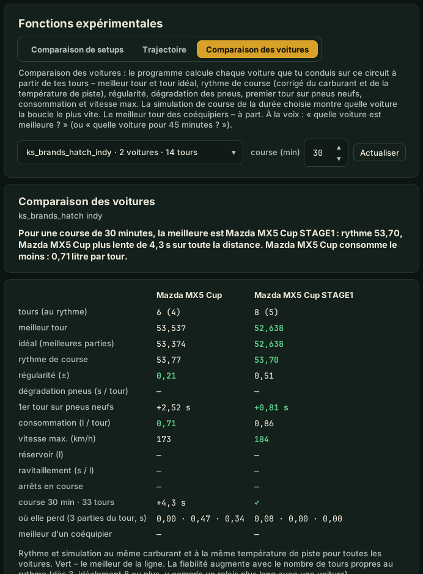
NOUVEAULe conseil pneus tient compte du fait que des pneus neufs froids sont d'abord plus lents.
NOUVEAUL'ingénieur répond à « état du moteur ? ».
NOUVEAUAssetto Corsa avec CSP : avant et arrière à la limite d'adhérence directement depuis les données pneus du jeu.
CORRECTIONPressions : conseil court, moins souvent, en course seulement avant l'arrêt.
CORRECTION« Enregistre le setup » enregistre aussi les pressions et les conseils du rapport.
CORRECTIONCharger un autre setup ne donne plus de faux avertissements.
CORRECTIONUne longue courbe (p. ex. Paddock Hill) compte pour un seul virage.
CORRECTIONPit wall : corrections du tableau des rivaux, du graphique des positions et de la carte de comparaison des tours.
CORRECTION« Connecter à l'équipe » relance aussitôt l'ingénieur avec la nouvelle équipe.
CORRECTIONFenêtre : singulier correct avec le nombre 1 (p. ex. « 1 tour » et non « 1 tours »).
Version 0.4.5.0 (22.11.2026)
NOUVEAUTrajectoire (version d'essai, version complète) : chaque section du circuit vue de dessus – ta trajectoire face à la meilleure (la tienne ou celle d'un coéquipier) et des conseils pour rouler autrement.

NOUVEAUOverlay OBS pour streamers : barre et cartes avec les données de la voiture, mini-carte de la catégorie, duel (qui rattrape qui et dans quel relais) ; les spectateurs demandent depuis le chat YouTube.

NOUVEAUL'overlay fonctionne aussi quand un coéquipier roule ; réglages sur la page « Overlay OBS » de la fenêtre.
NOUVEAUÀ l'arrivée, l'ingénieur félicite toute l'équipe : meilleur tour et pilotage le plus régulier ; l'overlay OBS affiche la carte « ARRIVÉE ».
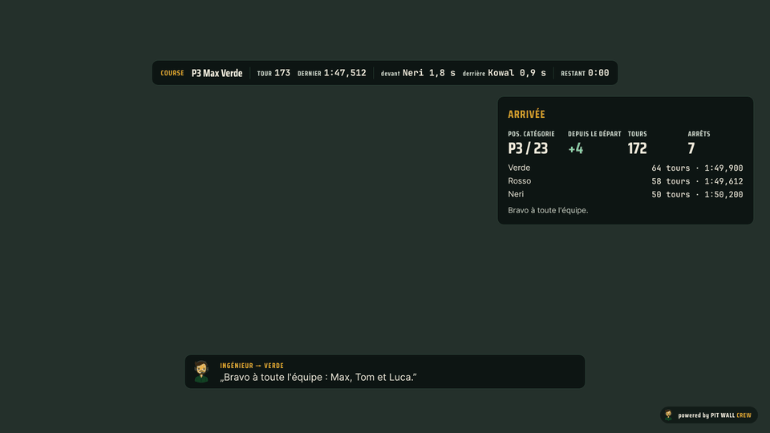
NOUVEAULimites de piste réparties par pilote de la voiture – à la voix et sur l'overlay.

NOUVEAUPit Wall : graphique des positions de toute la catégorie, trajectoires des pilotes dans la comparaison des tours, « plan obsolète » et âge des pneus des rivaux.

NOUVEAULe Pit Wall ouvert depuis le programme demande confirmation avant de basculer le navigateur sur une autre équipe ; le nom de l'équipe est affiché en haut.
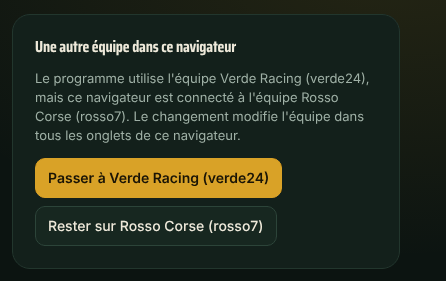
NOUVEAUPit Wall « En direct » : dernier état de la voiture quand personne ne roule.
NOUVEAUPlanning : heure du jeu à côté de l'heure réelle, nuit calculée sur l'heure du jeu.
NOUVEAUTest du micro avec réécoute : après l'enregistrement, tu t'entends et tu vois ce que l'ingénieur a compris.
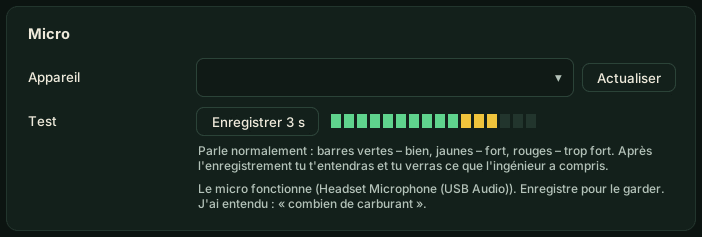
NOUVEAU« Premiers pas » coche ce qui est déjà réglé.

NOUVEAUNouvelles questions : dernier arrêt, arrêts et âge des pneus d'un rival, moyenne des derniers tours, « comment roule Amadeusz en T5 ? », « combien de fois suis-je sorti de la piste ? », « est-ce que je pousse trop ? », « combien de tours au total ? ».
NOUVEAUÀ la voix : « rappelle-moi dans 5 tours de… » et « arrêt dans 12 tours ».
NOUVEAUChangement de pilote à la voix, plus court : « pilote Dupont ».
NOUVEAU« Duel avec Dupont » agit comme « surveille Dupont » ; la fenêtre et l'overlay OBS rappellent la commande.
NOUVEAUAlertes de prise de tour « seulement avant le freinage ».

NOUVEAUBips pour « appuie, parle, appuie » (désactivables).

NOUVEAUL'ingénieur prévient quand la gomme sur la piste change.
CORRECTIONTempératures des freins dans LMU en °C (environ 270° de trop).
CORRECTIONFair share : les tours des coéquipiers faits quand le programme ne voyait pas la voiture ne vont plus au pilote qui est monté.
CORRECTIONLe fair share compte aussi un pilote qui n'utilise pas le programme (d'après le planning de l'équipe).
CORRECTIONUn pitstop mesuré à partir du milieu (reprise de la voiture au stand) ne fausse plus les temps de pitstop du plan.
CORRECTIONLe briefing après la reprise de la voiture attend la fin du ravitaillement et donne l'état après le service.
CORRECTIONBriefing pour le pilote suivant : plan jusqu'à l'arrivée calculé après le ravitaillement.
CORRECTIONComparaison des tours : perte exacte, sans fausse perte au départ.
CORRECTIONMeilleur tour sans temps annulé pour limites de piste.
CORRECTIONMeilleure reconnaissance vocale : noms selon le son, « Pneus. » comme question, plus de mots à la place de « surveille ».
CORRECTIONAprès « surveille » tout seul, l'ingénieur demande le nom ; un nom épelé est aussi compris.
CORRECTION« Arrête de surveiller » agit tout de suite, sans IA.
CORRECTION« Mets le carburant à 80 » règle le ravitaillement ; l'IA ne règle plus de ravitaillement si tu n'en parles pas.
CORRECTIONIA : une phrase du traducteur sur lui-même n'est plus prise pour les paroles du pilote.
CORRECTIONMessages : secteurs ordinaux, virgule décimale, conseils du tour d'un coéquipier et alertes de prise de tour moins fréquents.
CORRECTIONAutres langues : réponses, briefings au changement de pilote, conseils tirés du tour d'un coéquipier et alerte fair share traduits aussi sans clé Groq.
CORRECTIONPit Wall : fair share de toute l'équipe, liste complète des pilotes dans le plan des relais, voitures sur la carte sans retour en arrière.
CORRECTIONFenêtre : un champ « Relais » vidé ne revient plus à l'ancienne valeur.
CORRECTIONLe jeton « Équipe » de la fenêtre indique clairement la connexion et le pilote.
CORRECTIONSpotter : après « three wide », il annonce aussitôt « two wide » et le côté de l’adversaire.
CORRECTIONAutres langues : réponses de l’IA toujours dans la langue du pilote (certaines arrivaient en polonais).
CORRECTIONChat YouTube : les commandes des spectateurs s’affichent en 1 à 2 s (une connexion au lieu d’interrogations répétées).
CORRECTIONL’arrêt de Windows n’est plus signalé comme un plantage de l’ingénieur.
Version 0.4.4.12 (20.11.2026)
CORRECTIONCarte du circuit dans le rapport : les chicanes (p. ex. la première à Monza) ont leur vraie forme après un tour propre.
Version 0.4.4.11 (20.11.2026)
NOUVEAUFonctions expérimentales (testeurs) : carte « Test de setup » – A/B corrigé du carburant et des pneus, virages, usure des pneus, équilibre ; à la voix « je teste un nouveau setup ».

CORRECTIONL'ingénieur comprend plus de questions, aussi dans d'autres langues : « à combien est le troisième ? », « limites de piste ? », « et le fast bump ? », « mets 15 litres », « tu m'entends ? ».
CORRECTIONQuand l'ingénieur ne comprend pas une question, il le dit dans la langue du pilote.
CORRECTION« Surveille … » en essais et en qualifications compare les derniers tours.
CORRECTION« Comment sont les pneus ? » après un pitstop ne parle que des nouveaux pneus.
CORRECTIONL'avis sur un changement après le conseil sur les vibreurs et le talonnage est précis.
CORRECTIONMonza : numéros de virages comme sur la carte du cockpit ; une courbe à fond n'est pas un virage.
CORRECTIONQuestions sur le rapport de conduite : l'ingénieur connaît aussi les freins et les pressions des pneus.
CORRECTIONPit wall : corrections issues de la revue de code (ajout de pilotes, carte du circuit, export CSV).
Version 0.4.4.10 (16.11.2026)
CORRECTIONPorsche 911 GT3 R (LMU) : conseils d’amortisseurs dans le bon sens – 1 est le plus dur, 18 le plus souple.
Version 0.4.4.9 (16.11.2026)
NOUVEAUVolume à la voix : « plus fort » / « moins fort » et « spotter plus fort » / « spotter moins fort » ; curseur de volume séparé pour le spotter.

CORRECTIONAssetto Corsa : le conseil de pression précise la roue (gauche / droite) quand elles diffèrent.
Version 0.4.4.8 (15.11.2026)
CORRECTIONAssetto Corsa : la carte du circuit s'affiche à nouveau dans le rapport de conduite.
Version 0.4.4.7 (15.11.2026)
NOUVEAURapport de conduite, carte « Carburant » / « Énergie » : aussi le maximum utilisé sur un tour (avec l'énergie, le carburant aussi).

CORRECTIONBarre vide sous « Messages » au premier lancement d'une nouvelle version.
Novedades
Cambios en las últimas versiones de Pit Wall Crew.
Versión 0.4.6.2 (26.11.2026)
NUEVOLMU: límites de pista como en el juego – fracciones de punto en carrera, «esa vuelta no cuenta» en libres y clasificación.
NUEVOClasificación: tras cada vuelta, tiempo, posición en clase y diferencia con el primero; al final – posición.
NUEVOOverlay de OBS: un pit stop ajustado por voz muestra una ficha con lo ajustado.
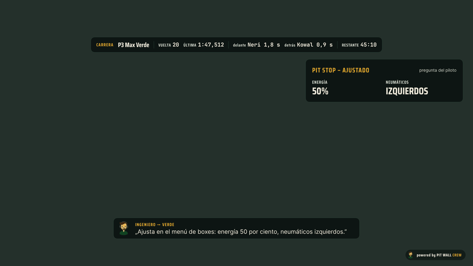
NUEVOOverlay de OBS: la ficha de bandera amarilla aparece por defecto solo en carrera.
NUEVOSpotter: recordatorio de «three wide» con palabras distintas cada vez; «Three wide» en seguida, cuando llega un tercer coche.
CORRECCIÓNiRacing: pitstop por voz; un segundo comando seguido ya no termina en «el juego no confirmó los cambios».
CORRECCIÓNiRacing, Assetto Corsa: informe de conducción justo al volver al box, sin vuelta de salida.
CORRECCIÓNiRacing, carrera por tiempo: cuando se agota el tiempo, el ingeniero ya no te manda entrar a boxes en la última vuelta.
CORRECCIÓNiRacing: diferencia con el rival justo tras la línea de meta, sin subestimarla («vigila» decía 1,4 s en lugar de 2,6 s).
CORRECCIÓNiRacing: el ingeniero ahora dice bien «salida desde la fila 7».
CORRECCIÓNInforme de conducción con setup fijo: las curvas «este coche» ya no llevan a una ficha de setup vacía.
CORRECCIÓNLínea de carrera: un circuito sinuoso sin rectas largas se divide en varios tramos, no en uno.
CORRECCIÓNiRacing: una vuelta con incidente no es limpia ni la mejor, como en el juego.
CORRECCIÓNInforme de conducción: la ficha de neumáticos solo aparece cuando el juego ha dado datos de neumáticos.
CORRECCIÓNOverlay de OBS: nombre del espectador de YouTube sin doble «@».
CORRECCIÓNCarrera por tiempo: las vueltas hasta el final se cuentan desde la meta del líder; el plan no dice «1 vuelta» cuando quedan dos.
CORRECCIÓNTras la meta: sin plan «hasta el final» ni briefing de relevo para el siguiente piloto; plan en el Pit Wall sin la frase repetida.
CORRECCIÓNLibres y clasificación: sin «entra a boxes» por la energía cuando la sesión se acaba.
CORRECCIÓNSpotter: de un coche que se está alejando ya no dice «sigue a la izquierda» ni «Two wide», sino directamente «libre».
CORRECCIÓNLMU: volver al garaje ya no cuenta como penalización por límites de pista.
CORRECCIÓNTras la bandera a cuadros del líder: sin diferencia con los coches que ya están en meta.
CORRECCIÓNOverlay de OBS: la bandera amarilla no aparece en el garaje, antes de la salida ni tras la meta.
CORRECCIÓNOverlay de OBS: tras la meta, la barra muestra el resultado; «al líder» en libres y clasificación es la diferencia con la mejor vuelta.
CORRECCIÓNOverlay de OBS: mejor vuelta con el número correcto y sin comparar con la vuelta de salida; duelo sin «v. 0».
Versión 0.4.6.1 (26.11.2026)
NUEVOiRacing: ingeniero, spotter y pit wall, con combustible, estrategia, rivales, clima, banderas e informe de conducción.
NUEVOiRacing: parada en boxes por voz, estimación de iRating, cuenta atrás hasta tu plaza e informe de telemetría (.ibt).
NUEVOiRacing, óvalos: balance en cada fase de la curva y consejo sobre qué cambiar en el setup.
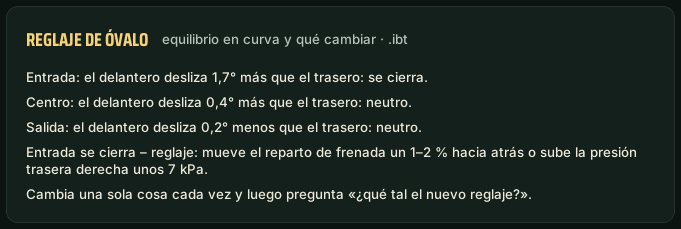
NUEVOTrazada en el informe de conducción y con el coach («¿cómo va mi línea en T5?»).
NUEVOInforme de conducción en tus unidades.
NUEVORecordatorios de eventos como entrada a boxes, lluvia y última vuelta, también desde el pit wall.
NUEVOCombustible: «reposta hasta la meta» y dónde soltar el acelerador para ahorrar.
NUEVOTras una segunda salida por la misma causa, consejo sobre ABS, TC o balance de frenos.
NUEVOSpotter en sonido espacial (opcional).
NUEVOPit wall: gráfico del volante en la comparación de vueltas y pista para cambiar a un piloto cansado.
NUEVONueva Ayuda: primeros pasos para cada juego, manual con búsqueda y «Revisar todo».
NUEVOOverlay de OBS: ajustes de barra listos y direcciones de todos los diseños.
NUEVOInstalador en 7 idiomas.
CORRECCIÓNEl spotter es más tranquilo, con menos avisos repetidos.
CORRECCIÓNEl ingeniero entiende mejor las preguntas y no reacciona a frases sueltas.
CORRECCIÓNMenos consejos innecesarios sobre combustible, goma en pista y presiones.
CORRECCIÓNMensajes de pit lane más claros.
CORRECCIÓNVentana: formas suavizadas, mapa de curvas legible y estados en una ventana estrecha.
CORRECCIÓNTodos los mensajes están traducidos, incluso sin clave de Groq.
CORRECCIÓNLa página «Superposición OBS» vuelve a desplazarse: se ven todos los ajustes.
Versión 0.4.5.1 (23.11.2026)
NUEVOOverlay de OBS: disposición propia de los elementos para cada escena, aspecto ajustable en la ventana.

NUEVOOverlay de OBS: torre de clase, tarjetas de eventos y comandos de espectadores del chat de Twitch.
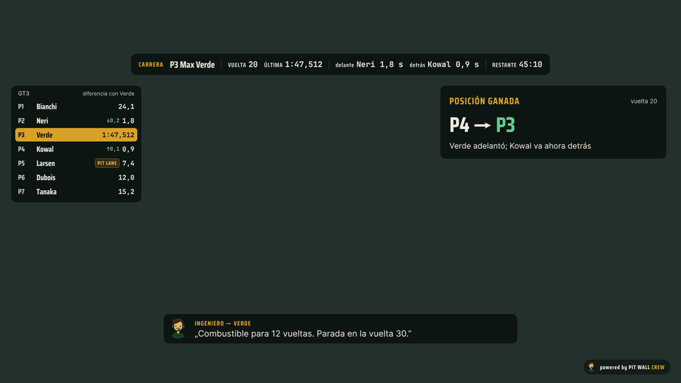
NUEVOPágina «Overlay de OBS» con descripción y 5 pasos para empezar.
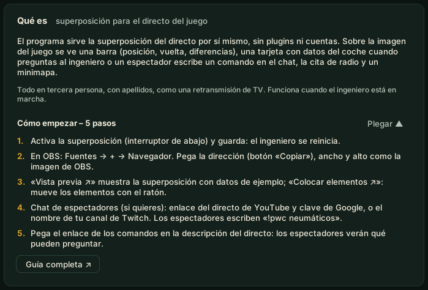
NUEVOComparación de coches en funciones experimentales, con el tiempo de parada; por voz «¿qué coche es mejor?».

NUEVOEl consejo de neumáticos tiene en cuenta que los nuevos fríos son al principio más lentos.
NUEVOEl ingeniero responde a «¿daños del motor?».
NUEVOAssetto Corsa con CSP: delante y detrás al límite de agarre directamente de los datos de neumáticos del juego.
CORRECCIÓNPresiones: consejo breve, menos a menudo, en carrera solo antes de la parada.
CORRECCIÓN«Guarda el setup» guarda también las presiones y los consejos del informe.
CORRECCIÓNCargar otro setup ya no da avisos falsos.
CORRECCIÓNUn arco largo (p. ej. Paddock Hill) es una sola curva.
CORRECCIÓNPit wall: correcciones en la tabla de rivales, el gráfico de posiciones y el mapa de comparación de vueltas.
CORRECCIÓN«Conectar con el equipo» reinicia al ingeniero con el nuevo equipo al instante.
CORRECCIÓNVentana: singular correcto con el número 1 (p. ej. «1 vuelta», no «1 vueltas»).
Versión 0.4.5.0 (22.11.2026)
NUEVOTrazada (versión de prueba, versión completa): cada sección del circuito desde arriba – tu trazada frente a la mejor (tuya o de un compañero) y consejos sobre dónde conducir distinto.
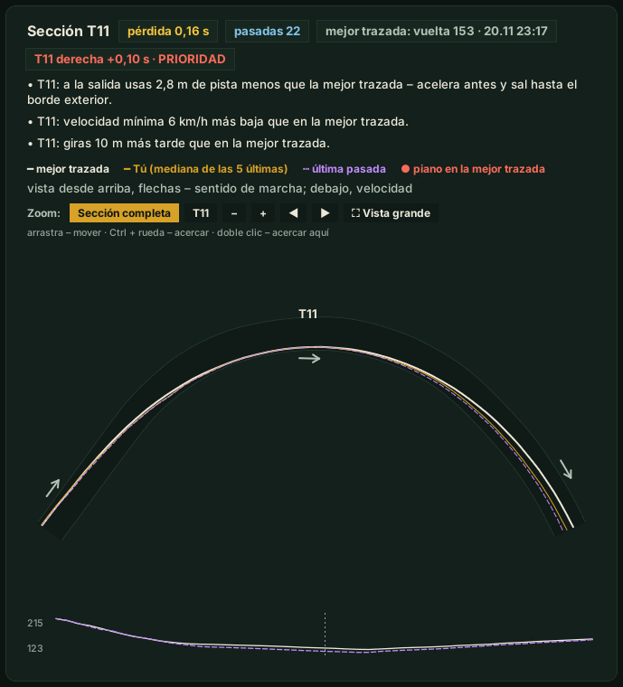
NUEVOOverlay OBS para streamers: barra y tarjetas con datos del coche, minimapa de la categoría, duelo (quién alcanza a quién y en qué stint); los espectadores preguntan desde el chat de YouTube.

NUEVOEl overlay también funciona cuando conduce un compañero; ajustes en la página «Overlay OBS» de la ventana.
NUEVOEn la meta el ingeniero felicita a todo el equipo: vuelta más rápida y conducción más constante; el overlay de OBS muestra la tarjeta «META».
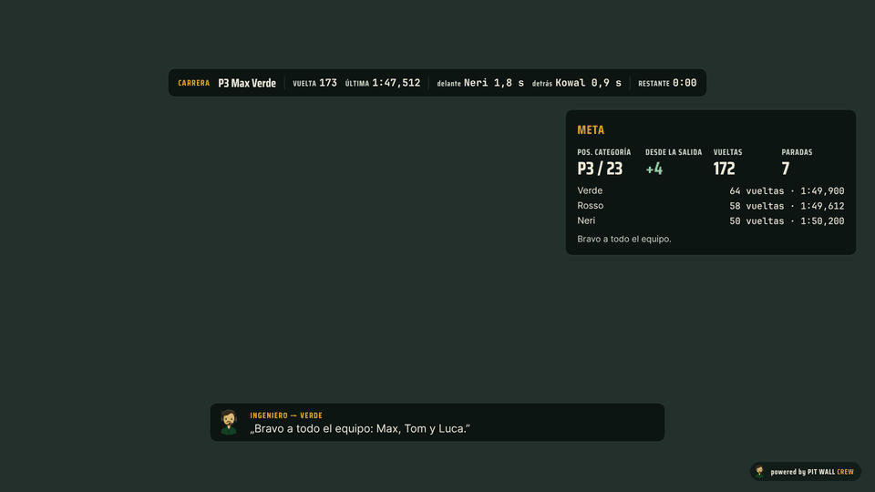
NUEVOLímites de pista divididos por pilotos del coche – por voz y en el overlay.

NUEVOPit Wall: gráfico de posiciones de toda la categoría, trazadas de los pilotos en la comparación de vueltas, «plan desactualizado» y edad de neumáticos de los rivales.

NUEVOEl Pit Wall abierto desde el programa pide confirmación antes de cambiar el navegador a otro equipo; el nombre del equipo aparece arriba.

NUEVOPit Wall «En directo»: último estado del coche cuando nadie conduce.
NUEVOHorario: hora del juego junto a la real, noche calculada con la hora del juego.
NUEVOPrueba de micrófono con reproducción: tras la grabación te oyes a ti mismo y ves lo que entendió el ingeniero.

NUEVO«Primeros pasos» marca lo que ya está configurado.
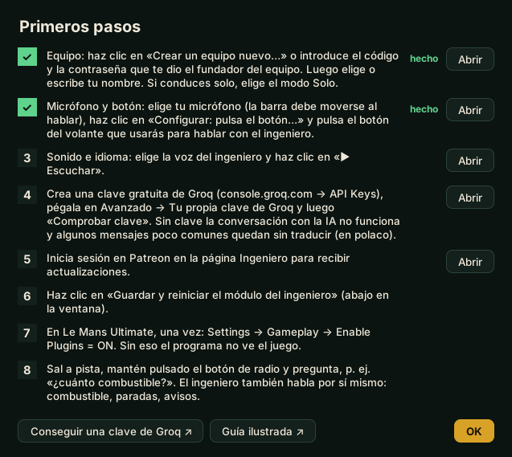
NUEVONuevas preguntas: último pitstop, paradas y edad de neumáticos de un rival, media de las últimas vueltas, «¿cómo va Amadeusz en la T5?», «¿cuántas veces me he salido de la pista?», «¿voy demasiado al límite?», «¿cuántas vueltas tendrá la carrera?».
NUEVOPor voz: «recuérdame en 5 vueltas que…» y «pitstop en 12 vueltas».
NUEVOCambio de piloto por voz más corto: «piloto García».
NUEVO«Duelo con García» funciona como «vigila a García»; la ventana y el overlay de OBS recuerdan el comando.
NUEVOAvisos de doblaje «solo antes de frenar».

NUEVOPitidos con «pulsa, habla, pulsa» (se pueden silenciar).

NUEVOEl ingeniero avisa cuando cambia la goma en la pista.
CORRECCIÓNTemperatura de frenos en LMU en °C (era unos 270° más alta).
CORRECCIÓNFair share: las vueltas de los compañeros dadas cuando el programa no veía el coche ya no se le apuntan al piloto que se subió.
CORRECCIÓNEl fair share cuenta también a un piloto que no usa el programa (según los turnos del equipo).
CORRECCIÓNUn pitstop medido desde la mitad (al coger el coche en boxes) ya no estropea los tiempos de pitstop del plan.
CORRECCIÓNEl briefing al coger el coche espera al final del repostaje y da el estado tras el servicio.
CORRECCIÓNBriefing para el siguiente piloto: plan hasta meta calculado después del repostaje.
CORRECCIÓNComparación de vueltas: pérdida exacta, sin falsa pérdida en la salida.
CORRECCIÓNMejor vuelta sin tiempo anulado por límites de pista.
CORRECCIÓNMejor reconocimiento de voz: nombres por sonido, «Neumáticos.» como pregunta, más palabras en lugar de «vigila».
CORRECCIÓNCon «vigila» a secas, el ingeniero pregunta el apellido; también entiende un apellido deletreado.
CORRECCIÓN«Deja de vigilar» funciona al instante, sin IA.
CORRECCIÓN«Pon el combustible a 80» ajusta el repostaje; la IA ya no ajusta el repostaje si no hablas de él.
CORRECCIÓNIA: una frase del traductor sobre sí mismo ya no se toma como palabras del piloto.
CORRECCIÓNMensajes: sectores ordinales, coma decimal, menos consejos de la vuelta de un compañero y menos avisos de doblaje.
CORRECCIÓNOtros idiomas: respuestas, briefings del cambio de piloto, consejos de la vuelta de un compañero y aviso de fair share traducidos también sin clave Groq.
CORRECCIÓNPit Wall: fair share de todo el equipo, lista completa de pilotos en el plan de stints, coches en el mapa sin retroceder.
CORRECCIÓNVentana: un campo «Stint» vaciado ya no vuelve al valor anterior.
CORRECCIÓNLa ficha «Equipo» de la ventana muestra claramente la conexión y el piloto.
CORRECCIÓNSpotter: tras «three wide» dice enseguida «two wide» y el lado del rival.
CORRECCIÓNOtros idiomas: las respuestas de la IA siempre en el idioma del piloto (algunas salían en polaco).
CORRECCIÓNChat de YouTube: los comandos de los espectadores aparecen en 1–2 s (una conexión en lugar de consultas repetidas).
CORRECCIÓNApagar Windows ya no se notifica como un fallo del ingeniero.
Versión 0.4.4.12 (20.11.2026)
CORRECCIÓNMapa del circuito en el informe: las chicanes (p. ej. la primera de Monza) tienen su forma real tras una vuelta limpia.
Versión 0.4.4.11 (20.11.2026)
NUEVOFunciones experimentales (testers): tarjeta «Prueba de setup» – A/B corregido por combustible y neumáticos, curvas, desgaste, balance; por voz «estoy probando un setup nuevo».
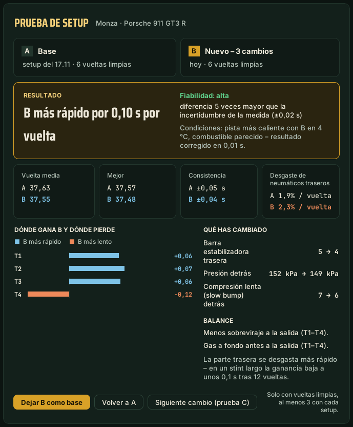
CORRECCIÓNEl ingeniero entiende más preguntas, también en otros idiomas: «¿a cuánto está el tercero?», «¿límites de pista?», «¿y el fast bump?», «pon 15 litros», «¿me oyes?».
CORRECCIÓNCuando el ingeniero no entiende una pregunta, lo dice en el idioma del piloto.
CORRECCIÓN«Vigila a …» en libres y clasificación compara las últimas vueltas.
CORRECCIÓN«¿Cómo van los neumáticos?» tras un pitstop habla solo de los neumáticos nuevos.
CORRECCIÓNLa valoración de un cambio tras el consejo sobre pianos y golpes contra el suelo es concreta.
CORRECCIÓNMonza: números de curva como en el mapa de la cabina; una curva a fondo no es una curva.
CORRECCIÓNPreguntas sobre el informe de conducción: el ingeniero también conoce los frenos y las presiones.
CORRECCIÓNPit wall: correcciones de la revisión de código (añadir pilotos, mapa del circuito, exportación CSV).
Versión 0.4.4.10 (16.11.2026)
CORRECCIÓNPorsche 911 GT3 R (LMU): consejos de amortiguadores en la dirección correcta – 1 es el más duro, 18 el más blando.
Versión 0.4.4.9 (16.11.2026)
NUEVOVolumen por voz: «más alto» / «más bajo» y «spotter más alto» / «spotter más bajo»; control de volumen propio del spotter.

CORRECCIÓNAssetto Corsa: el consejo de presión indica la rueda (izquierda / derecha) cuando difieren.
Versión 0.4.4.8 (15.11.2026)
CORRECCIÓNAssetto Corsa: el mapa del circuito vuelve a verse en el informe de conducción.
Versión 0.4.4.7 (15.11.2026)
NUEVOInforme de conducción, tarjeta «Combustible» / «Energía»: también lo máximo gastado en una vuelta (con energía, también el combustible).

CORRECCIÓNBarra vacía bajo «Mensajes» en el primer inicio de una versión nueva.
Novità
Modifiche nelle ultime versioni di Pit Wall Crew.
Versione 0.4.6.2 (26.11.2026)
NUOVOLMU: limiti della pista come nel gioco – frazioni di punto in gara, «quel giro non conta» in prove e qualifiche.
NUOVOQualifiche: dopo ogni giro tempo, posizione in classe e distacco dal primo; alla fine – posizione.
NUOVOOverlay OBS: un pit stop impostato a voce mostra la scheda con ciò che è stato impostato.
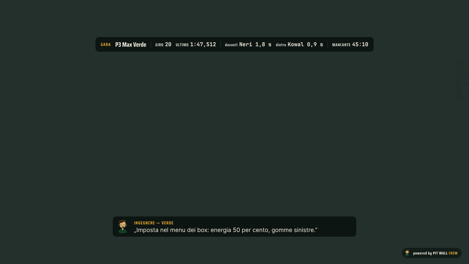
NUOVOOverlay OBS: la scheda della bandiera gialla compare di default solo in gara.
NUOVOSpotter: promemoria di «three wide» ogni volta con parole diverse; «Three wide» subito quando arriva una terza auto.
CORREZIONEiRacing: pitstop vocale – un secondo comando di fila non finisce più con «il gioco non ha confermato le modifiche».
CORREZIONEiRacing, Assetto Corsa: report di guida subito dopo il rientro ai box, senza giro di uscita.
CORREZIONEiRacing, gara a tempo: allo scadere del tempo l'ingegnere non ti dice più di rientrare ai box nell'ultimo giro.
CORREZIONEiRacing: distacco dal rivale subito dopo il traguardo, senza sottovalutarlo («tieni d'occhio» diceva 1,4 s invece di 2,6 s).
CORREZIONEiRacing: l'ingegnere ora dice correttamente «partenza dalla fila 7».
CORREZIONEReport di guida con setup fisso: le curve «questa auto» non rimandano più a una scheda setup vuota.
CORREZIONELinea di guida: un tracciato tortuoso senza lunghi rettilinei è diviso in più settori, non in uno solo.
CORREZIONEiRacing: un giro con incidente non è né pulito né il migliore, come nel gioco.
CORREZIONEReport di guida: la scheda gomme compare solo se il gioco ha fornito dati sulle gomme.
CORREZIONEOverlay OBS: nome dello spettatore di YouTube senza doppia «@».
CORREZIONEGara a tempo: i giri fino all'arrivo si contano dall'arrivo del leader; il piano non dice «1 giro» quando ne restano due.
CORREZIONEDopo l'arrivo: niente piano «alla fine» né briefing di passaggio per il pilota successivo; piano sul Pit Wall senza la frase ripetuta.
CORREZIONEProve e qualifiche: niente «rientra ai box» per l'energia quando la sessione sta per finire.
CORREZIONESpotter: di un'auto che si sta allontanando non dice più «ancora a sinistra» né «Two wide», ma subito «libero».
CORREZIONELMU: il ritorno al garage non viene più conteggiato come penalità per limiti della pista.
CORREZIONEDopo la bandiera a scacchi del leader: niente distacco dalle auto già arrivate.
CORREZIONEOverlay OBS: la bandiera gialla non compare nel garage, prima della partenza né dopo l'arrivo.
CORREZIONEOverlay OBS: dopo l'arrivo la barra mostra il risultato; «dal leader» nelle prove e nelle qualifiche indica il distacco dal giro migliore.
CORREZIONEOverlay OBS: giro migliore con il numero giusto e senza confronto con il giro di partenza; duello senza «giro 0».
Versione 0.4.6.1 (26.11.2026)
NUOVOiRacing: ingegnere, spotter e pit wall, con carburante, strategia, avversari, meteo, bandiere e report di guida.
NUOVOiRacing: pitstop a voce, stima dell'iRating, conto alla rovescia verso il tuo box e report di telemetria (.ibt).
NUOVOiRacing, ovali: bilanciamento in ogni fase della curva e consiglio su cosa cambiare nel setup.
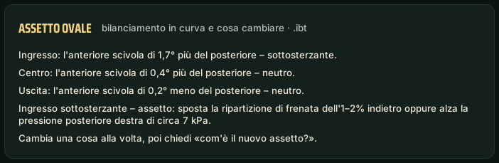
NUOVOTraiettoria nel report di guida e dal coach («come va la mia linea in T5?»).
NUOVOReport di guida nelle tue unità.
NUOVOPromemoria per eventi come ingresso ai box, pioggia e ultimo giro, anche dal pit wall.
NUOVOCarburante: «fai il pieno fino al traguardo» e dove alzare il piede per risparmiare.
NUOVODopo una seconda uscita per lo stesso motivo, consiglio su ABS, TC o bilanciamento dei freni.
NUOVOSpotter in audio spaziale (opzionale).
NUOVOPit wall: grafico dello sterzo nel confronto dei giri e suggerimento per cambiare un pilota stanco.
NUOVONuova Guida: primi passi per ogni gioco, manuale con ricerca e «Controlla tutto».
NUOVOOverlay OBS: impostazioni della barra pronte e indirizzi di tutti i layout.
NUOVOInstaller in 7 lingue.
CORREZIONELo spotter è più calmo, con meno avvisi ripetuti.
CORREZIONEL'ingegnere capisce meglio le domande e ignora le frasi casuali.
CORREZIONEMeno consigli inutili su carburante, gommatura e pressioni.
CORREZIONEMessaggi del pit lane più chiari.
CORREZIONEFinestra: forme più lisce, mappa della curva leggibile e stati nella finestra stretta.
CORREZIONETutti i messaggi sono tradotti, anche senza chiave Groq.
CORREZIONELa pagina «Overlay OBS» scorre di nuovo: si vedono tutte le impostazioni.
Versione 0.4.5.1 (23.11.2026)
NUOVOOverlay OBS: disposizione propria degli elementi per ogni scena, aspetto impostato nella finestra.
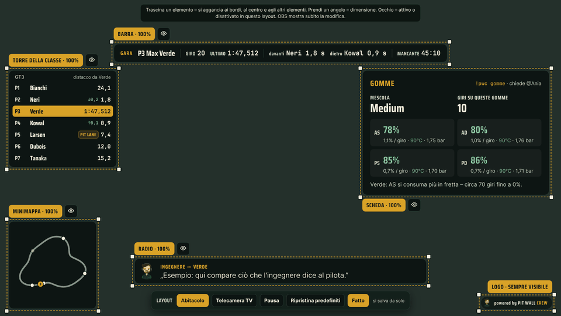
NUOVOOverlay OBS: torre di classe, schede eventi e comandi degli spettatori dalla chat di Twitch.

NUOVOPagina «Overlay OBS» con descrizione e 5 passi per iniziare.

NUOVOConfronto auto nelle funzioni sperimentali, con il tempo delle soste; a voce «quale auto è migliore?».
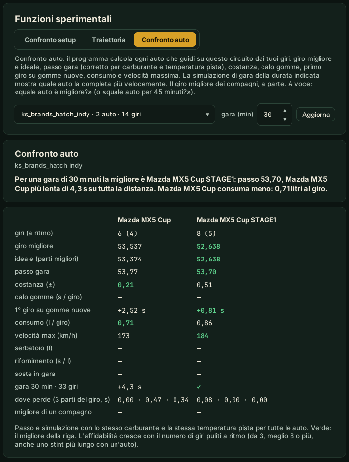
NUOVOIl consiglio sulle gomme tiene conto che le gomme nuove fredde all'inizio sono più lente.
NUOVOL'ingegnere risponde a «danni al motore?».
NUOVOAssetto Corsa con CSP: anteriore e posteriore al limite di aderenza direttamente dai dati gomme del gioco.
CORREZIONEPressioni: consiglio breve, meno spesso, in gara solo prima della sosta.
CORREZIONE«Salva l'assetto» salva anche le pressioni e i consigli del rapporto.
CORREZIONECaricare un altro assetto non dà più falsi avvisi.
CORREZIONEUn arco lungo (es. Paddock Hill) è una sola curva.
CORREZIONEPit wall: correzioni a tabella rivali, grafico delle posizioni e mappa del confronto giri.
CORREZIONE«Collega alla squadra» riavvia subito l'ingegnere con la nuova squadra.
CORREZIONEFinestra: singolare corretto con il numero 1 (es. «1 giro», non «1 giri»).
Versione 0.4.5.0 (22.11.2026)
NUOVOTraiettoria (versione di prova, versione completa): ogni sezione del circuito vista dall'alto – la tua traiettoria contro la migliore (tua o di un compagno) e consigli su dove guidare diversamente.

NUOVOOverlay OBS per streamer: barra e schede con i dati dell'auto, minimappa della classe, duello (chi raggiunge chi e in quale stint); gli spettatori chiedono dalla chat di YouTube.

NUOVOL'overlay funziona anche quando guida un compagno; impostazioni nella pagina «Overlay OBS» della finestra.
NUOVOAl traguardo l'ingegnere si complimenta con tutta la squadra: giro più veloce e guida più costante; l'overlay OBS mostra la scheda «TRAGUARDO».

NUOVOLimiti della pista suddivisi per i piloti dell'auto – a voce e sull'overlay.

NUOVOPit Wall: grafico delle posizioni di tutta la classe, traiettorie dei piloti nel confronto dei giri, «piano superato» ed età delle gomme dei rivali.

NUOVOIl Pit Wall aperto dal programma chiede conferma prima di passare il browser a un'altra squadra; il nome della squadra è in alto.

NUOVOPit Wall «Dal vivo»: ultimo stato dell'auto quando nessuno guida.
NUOVOProgramma: ora del gioco accanto a quella reale, notte calcolata dall'ora del gioco.
NUOVOProva del microfono con riascolto: dopo la registrazione ti riascolti e vedi cosa ha capito l'ingegnere.

NUOVO«Primi passi» spunta ciò che è già configurato.
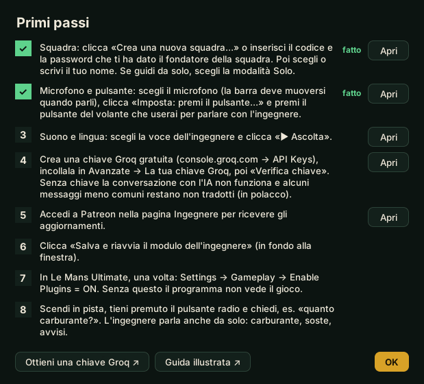
NUOVONuove domande: ultimo pit stop, soste ed età delle gomme di un rivale, media degli ultimi giri, «come va Amadeusz in T5?», «quante volte sono uscito di pista?», «sto esagerando?», «quanti giri in totale?».
NUOVOA voce: «ricordami tra 5 giri di…» e «pit stop tra 12 giri».
NUOVOCambio pilota a voce più breve: «pilota Rossi».
NUOVO«Duello con Rossi» funziona come «tieni d'occhio Rossi»; la finestra e l'overlay OBS ricordano il comando.
NUOVOAvvisi di doppiaggio «solo prima della frenata».

NUOVOBip con «premi, parla, premi» (disattivabili).

NUOVOL'ingegnere avvisa quando cambia la gommatura della pista.
CORREZIONETemperatura dei freni in LMU in °C (era circa 270° più alta).
CORREZIONEFair share: i giri dei compagni fatti quando il programma non vedeva l'auto non vanno più al pilota che è salito.
CORREZIONEIl fair share conta anche un pilota che non usa il programma (preso dai turni della squadra).
CORREZIONEUn pit stop misurato da metà (auto presa ai box) non rovina più i tempi di pit stop nel piano.
CORREZIONEIl briefing dopo aver preso l'auto aspetta la fine del rifornimento e dà lo stato dopo il servizio.
CORREZIONEBriefing per il pilota successivo: piano fino al traguardo calcolato dopo il rifornimento.
CORREZIONEConfronto dei giri: perdita esatta, senza falsa perdita alla partenza.
CORREZIONEGiro migliore senza tempo cancellato per limiti della pista.
CORREZIONERiconoscimento vocale migliore: nomi in base al suono, «Gomme.» come domanda, più parole al posto di «controlla».
CORREZIONECon «tieni d'occhio» da solo, l'ingegnere chiede il cognome; capisce anche un cognome dettato lettera per lettera.
CORREZIONE«Smetti di sorvegliare» funziona subito, senza IA.
CORREZIONE«Imposta il carburante a 80» imposta il rifornimento; l'IA non imposta più il rifornimento se non ne parli.
CORREZIONEIA: una frase del traduttore su sé stesso non viene più presa per parole del pilota.
CORREZIONEMessaggi: settori ordinali, virgola decimale, consigli dal giro di un compagno e avvisi di doppiaggio meno frequenti.
CORREZIONEAltre lingue: risposte, briefing al cambio pilota, consigli dal giro di un compagno e avviso fair share tradotti anche senza chiave Groq.
CORREZIONEPit Wall: fair share di tutta la squadra, elenco completo dei piloti nel piano degli stint, auto sulla mappa senza tornare indietro.
CORREZIONEFinestra: un campo «Stint» svuotato non torna al vecchio valore.
CORREZIONEIl gettone «Squadra» nella finestra mostra chiaramente la connessione e il pilota.
CORREZIONESpotter: dopo «three wide» dice subito «two wide» e il lato dell'avversario.
CORREZIONEAltre lingue: risposte dell'IA sempre nella lingua del pilota (alcune arrivavano in polacco).
CORREZIONEChat YouTube: i comandi degli spettatori compaiono in 1–2 s (una connessione invece di richieste ripetute).
CORREZIONELo spegnimento di Windows non viene più segnalato come crash dell'ingegnere.
Versione 0.4.4.12 (20.11.2026)
CORREZIONEMappa della pista nel rapporto: le chicane (es. la prima di Monza) hanno la forma reale dopo un giro pulito.
Versione 0.4.4.11 (20.11.2026)
NUOVOFunzioni sperimentali (tester): scheda «Test setup» – A/B corretto per carburante e gomme, curve, usura gomme, bilanciamento; a voce «sto provando un nuovo setup».

CORREZIONEL'ingegnere capisce più domande, anche in altre lingue: «quanto manca al terzo?», «limiti della pista?», «e il fast bump?», «metti 15 litri», «mi senti?».
CORREZIONEQuando l'ingegnere non capisce una domanda, lo dice nella lingua del pilota.
CORREZIONE«Controlla …» in prove e qualifiche confronta gli ultimi giri.
CORREZIONE«Come sono le gomme?» dopo un pitstop parla solo delle gomme nuove.
CORREZIONEIl giudizio su una modifica dopo il consiglio su cordoli e talonamento è concreto.
CORREZIONEMonza: numeri delle curve come sulla mappa nell'abitacolo; una curva in pieno non è una curva.
CORREZIONEDomande sul rapporto di guida: l'ingegnere conosce anche freni e pressioni delle gomme.
CORREZIONEPit wall: correzioni dalla revisione del codice (aggiunta piloti, mappa della pista, esportazione CSV).
Versione 0.4.4.10 (16.11.2026)
CORREZIONEPorsche 911 GT3 R (LMU): consigli sugli ammortizzatori nel verso giusto – 1 è il più rigido, 18 il più morbido.
Versione 0.4.4.9 (16.11.2026)
NUOVOVolume a voce: «più forte» / «più piano» e «spotter più forte» / «spotter più piano»; cursore del volume separato per lo spotter.

CORREZIONEAssetto Corsa: il consiglio sulla pressione indica la ruota (sinistra / destra) quando sono diverse.
Versione 0.4.4.8 (15.11.2026)
CORREZIONEAssetto Corsa: la mappa del circuito torna a vedersi nel rapporto di guida.
Versione 0.4.4.7 (15.11.2026)
NUOVORapporto di guida, scheda «Carburante» / «Energia»: anche il massimo consumato in un giro (con l'energia, anche il carburante).
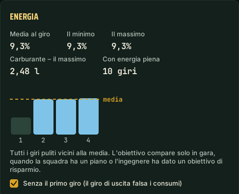
CORREZIONEBarra vuota sotto «Messaggi» al primo avvio di una nuova versione.
Nyheder
Ændringer i de seneste versioner af Pit Wall Crew.
Version 0.4.6.2 (26.11.2026)
NYLMU: track limits som i spillet – brøkdele af et point i løbet, »den runde tæller ikke« i træning og kvalifikation.
NYKvalifikation: efter hver runde tid, position i klassen og afstand til første; til sidst – position.
NYOBS-overlay: en pitstop indstillet med stemme viser et kort med det, der blev indstillet.
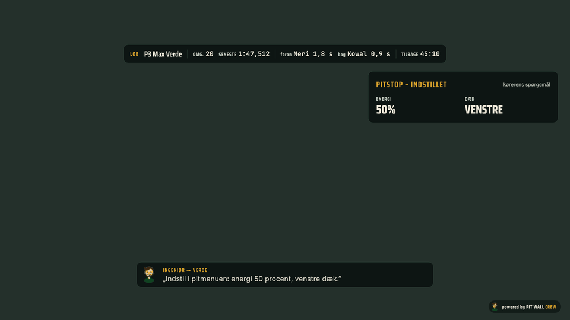
NYOBS-overlay: kortet for det gule flag vises som standard kun i løbet.
NYSpotter: påmindelse om »three wide« med andre ord; »Three wide« med det samme, når en tredje bil kommer med.
RETTELSEiRacing: pitstop med stemme – en anden kommando i træk ender ikke længere med »spillet bekræftede ikke ændringerne«.
RETTELSEiRacing, Assetto Corsa: kørselsrapport straks efter indkørsel i pit, uden udkørselsrunde.
RETTELSEiRacing, tidskørsel: når tiden er udløbet, beder ingeniøren dig ikke længere køre ind i pit på sidste runde.
RETTELSEiRacing: afstand til rivalen lige efter målstregen uden underdrivelse (»hold øje« sagde 1,4 s i stedet for 2,6 s).
RETTELSEiRacing: ingeniøren siger nu korrekt »start fra række 7«.
RETTELSEKørselsrapport ved fast setup: sving »denne bil« fører ikke længere til et tomt setupkort.
RETTELSERacerlinje: en kurvet bane uden lange lige strækninger deles op i flere sektioner, ikke én.
RETTELSEiRacing: en runde med hændelse er hverken ren eller den bedste – ligesom i spillet.
RETTELSEKørselsrapport: dækkortet vises kun, når spillet har givet data om dæk.
RETTELSEOBS-overlay: navnet på YouTube-seeren uden dobbelt »@«.
RETTELSETidskørsel: omgange til mål tælles fra lederens målpassage – planen siger ikke »1 omgang«, når der er to tilbage.
RETTELSEEfter mål: ingen plan »til mål« og ingen overleveringsbriefing til næste kører; plan på Pit Wall uden gentaget sætning.
RETTELSETræning og kvalifikation: ingen »kør i pit« på grund af energi, når sessionen slutter.
RETTELSESpotter: om en bil, der lige er ved at køre fra, siger den ikke længere »stadig venstre« eller »Two wide« – straks »fri«.
RETTELSELMU: tilbagekørsel til garagen tælles ikke længere som straf for track limits.
RETTELSEEfter det ternede flag til den førende: ingen afstand til biler, der allerede er i mål.
RETTELSEOBS-overlay: det gule flag dukker ikke op i garagen, før start eller efter mål.
RETTELSEOBS-overlay: efter mål viser bjælken resultatet; »til fører« i træning og kvalifikation er afstanden til bedste omgang.
RETTELSEOBS-overlay: bedste omgang med det rigtige nummer og uden sammenligning med startomgangen; duellen uden »omg. 0«.
Version 0.4.6.1 (26.11.2026)
NYiRacing: ingeniør, spotter og Pit Wall, med brændstof, strategi, rivaler, vejr, flag og kørselsrapport.
NYiRacing: pitstop med stemme, iRating-skøn, nedtælling til din plads og telemetrirapport (.ibt).
NYiRacing, ovaler: balance i hver fase af et sving og råd om, hvad du skal ændre i setuppet.
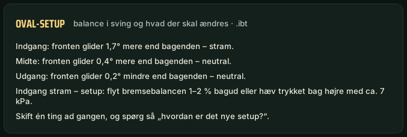
NYKørelinje i kørselsrapporten og hos træneren („Hvordan er min linje i T5?“).
NYKørselsrapport i dine enheder.
NYPåmindelser om hændelser som pit ind, regn og sidste omgang, også fra Pit Wall.
NYBrændstof: „tank op til målstregen“ og hvor du skal slippe speederen for at spare.
NYEfter en ny udflugt af samme årsag et råd om ABS, TC eller bremsebalance.
NYSpotter i rumlyd (valgfrit).
NYPit Wall: rattegnet i rundesammenligningen og et tip om at skifte en træt kører.
NYNy Hjælp: første skridt for hvert spil, manual med søgning og „Tjek alt“.
NYOBS-overlay: klare barindstillinger og adresser til alle layouts.
NYInstallationsprogram på 7 sprog.
RETTELSESpotteren er roligere, med færre gentagne advarsler.
RETTELSEIngeniøren forstår spørgsmål bedre og reagerer ikke på tilfældige sætninger.
RETTELSEFærre unødvendige råd om brændstof, gummipåsætning og tryk.
RETTELSETydeligere pit lane-beskeder.
RETTELSEVindue: glattere former, læsbart svingkort og statusser i et smalt vindue.
RETTELSEAlle beskeder er oversat, også uden Groq-nøgle.
RETTELSESiden “OBS-overlay” kan rulles igen – alle indstillinger er synlige.
Version 0.4.5.1 (23.11.2026)
NYOBS-overlay: eget layout af elementerne for hver scene, udseende indstilles i vinduet.

NYOBS-overlay: klassetårn, hændelseskort og seerkommandoer fra Twitch-chatten.

NYSiden »OBS-overlay« med beskrivelse og 5 trin til start.

NYBilsammenligning i de eksperimentelle funktioner, med pitstoptid; med stemmen »hvilken bil er bedst?«.
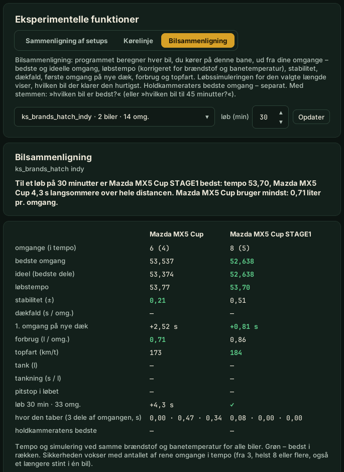
NYDækrådet tager højde for, at nye kolde dæk i starten er langsommere.
NYIngeniøren svarer på »motorskade?«.
NYAssetto Corsa med CSP: for og bag på grebsgrænsen direkte fra spillets dækdata.
RETTELSEDæktryk: kort råd, sjældnere, i løbet kun før pitstop.
RETTELSE»Gem opsætningen« gemmer også dæktryk og rådene fra rapporten.
RETTELSEAt indlæse en anden opsætning giver ikke længere falske advarsler.
RETTELSEEn lang kurve (fx Paddock Hill) er ét sving.
RETTELSEPit wall: rettelser i rivaltabellen, positionsgrafen og kortet i omgangssammenligningen.
RETTELSE»Forbind til holdet« genstarter straks ingeniøren med det nye hold.
RETTELSEVindue: korrekt ental ved tallet 1 (fx »1 omgang«, ikke »1 omgange«).
Version 0.4.5.0 (22.11.2026)
NYKørelinje (prøveversion, fuld version): hver banesektion set ovenfra – din linje mod den bedste (din eller en holdkammerats) og råd om, hvor du skal køre anderledes.

NYOBS-overlay til streamere: bjælke og kort med bilens data, minikort over klassen, duel (hvem indhenter hvem og i hvilket stint); seerne spørger fra YouTube-chatten.

NYOverlayet virker også, når en holdkammerat kører; indstillinger på siden »OBS-overlay« i vinduet.
NYVed målstregen roser ingeniøren hele holdet: hurtigste omgang og mest jævne kørsel; OBS-overlayet viser kortet »MÅL«.
NYTrack limits fordelt på bilens kørere – med stemmen og på overlayet.
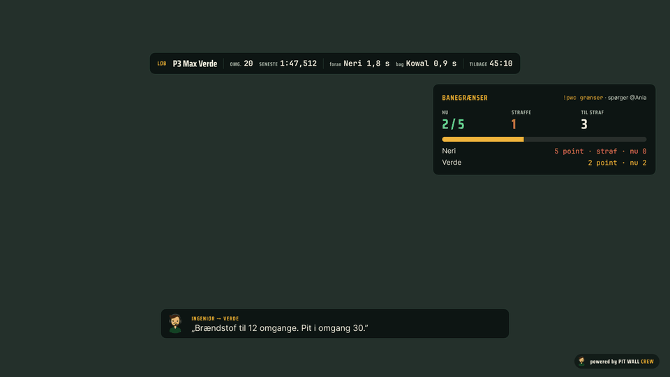
NYPit Wall: positionsgraf for hele klassen, kørernes linjer i omgangssammenligningen, »plan forældet« og rivalernes dækalder.

NYPit Wall åbnet fra programmet spørger, før browseren skiftes til et andet hold; holdets navn står øverst.

NYPit Wall »Live«: bilens seneste status, når ingen kører.
NYKøreplan: tid i spillet ved siden af den rigtige, nat regnet ud fra tiden i spillet.
NYMikrofontest med afspilning: efter optagelsen hører du dig selv og ser, hvad ingeniøren forstod.

NY»Første skridt« markerer det, der allerede er sat op.

NYNye spørgsmål: sidste pitstop, en rivals stop og dækalder, gennemsnit af de seneste omgange, »hvordan kører Amadeusz i T5?«, »hvor mange gange kørte jeg af banen?«, »kører jeg for hårdt?«, »hvor mange omgange bliver løbet?«.
NYMed stemmen: »mind mig om om 5 omgange, at…« og »pitstop om 12 omgange«.
NYKortere kørerskift med stemmen: »kører Jensen«.
NY»Duel med Jensen« virker som »hold øje med Jensen«; vinduet og OBS-overlayet viser kommandoen.
NYAdvarsler om overhaling af bagmænd »kun før opbremsning«.
NYBip ved »tryk, tal, tryk« (kan slås fra).
NYIngeniøren siger til, når gummiet på banen ændrer sig.
RETTELSEBremsetemperaturer i LMU i °C (var ca. 270° for høje).
RETTELSEFair share: holdkammeraters omgange fra den tid, hvor programmet ikke så bilen, går ikke længere til den kører, der satte sig ind.
RETTELSEFair share tæller også en kører, der ikke bruger programmet (fra holdets stint-rækkefølge).
RETTELSEEt pitstop målt fra midten (bilen overtaget i pitten) ødelægger ikke længere pitstoptiderne i planen.
RETTELSEBriefingen efter overtagelse af bilen venter, til tankningen er færdig, og giver status efter service.
RETTELSEBriefing til næste kører: planen til mål beregnes efter tankningen.
RETTELSEOmgangssammenligning: præcist tab, intet falsk tab ved start.
RETTELSEBedste omgang uden tid annulleret for track limits.
RETTELSEBedre talegenkendelse: navne efter lyd, »Dæk.« som spørgsmål, flere ord i stedet for »hold øje med«.
RETTELSESiger du kun »hold øje med«, spørger ingeniøren efter navnet; et bogstaveret navn forstås også.
RETTELSE»Stop med at holde øje« virker med det samme, uden AI.
RETTELSE»Sæt brændstof til 80« virker nu som tankkommando; AI'en ændrer ikke længere tankningen, når du ikke taler om den.
RETTELSEAI: oversætterens sætning om sig selv tages ikke længere for kørerens ord.
RETTELSEBeskeder: sektorer som ordenstal, decimalkomma, sjældnere råd fra en holdkammerats omgang og advarsler om overhaling.
RETTELSEAndre sprog: svar, briefinger ved kørerskift, råd fra en holdkammerats omgang og fair share-advarslen er også oversat uden Groq-nøgle.
RETTELSEPit Wall: fair share for hele holdet, fuld kørerliste i stintplanen, biler på kortet hopper ikke tilbage.
RETTELSEVindue: et tømt »Stint«-felt vender ikke tilbage til den gamle værdi.
RETTELSEMærket »Hold« i vinduet viser tydeligt forbindelsen og køreren.
RETTELSESpotter: efter »three wide« siger den straks »two wide« og modstanderens side.
RETTELSEAndre sprog: AI-svar altid på kørerens sprog (nogle kom på polsk).
RETTELSEYouTube-chat: seernes kommandoer vises efter 1–2 s (én forbindelse i stedet for gentagne forespørgsler).
RETTELSENedlukning af Windows meldes ikke længere som et nedbrud af ingeniøren.
Version 0.4.4.12 (20.11.2026)
RETTELSEBanekort i rapporten: chikaner (f.eks. den første i Monza) får deres rigtige form efter én ren omgang.
Version 0.4.4.11 (20.11.2026)
NYEksperimentelle funktioner (testere): kortet „Setuptest“ – A/B korrigeret for brændstof og dæk, sving, dækslid, balance; med stemmen „jeg tester et nyt setup“.

RETTELSEIngeniøren forstår flere spørgsmål, også på andre sprog: „hvor langt er der til tredje?“, „track limits?“, „hvad med fast bump?“, „sæt 15 liter“, „kan du høre mig?“.
RETTELSENår ingeniøren ikke forstår et spørgsmål, siger han det på kørerens sprog.
RETTELSE„Hold øje med …“ i træning og kvalifikation sammenligner de seneste omgange.
RETTELSE„Hvordan er dækkene?“ efter et pitstop taler kun om de nye dæk.
RETTELSEVurderingen af en ændring efter rådet om kantsten og bundslag er konkret.
RETTELSEMonza: svingnumre som på kortet i cockpittet; en bue taget for fuld gas er ikke et sving.
RETTELSESpørgsmål om kørselsrapporten: ingeniøren kender også bremser og dæktryk.
RETTELSEPit wall: rettelser fra kodegennemgangen (tilføjelse af kørere, banekort, CSV-eksport).
Version 0.4.4.10 (16.11.2026)
RETTELSEPorsche 911 GT3 R (LMU): dæmperråd i den rigtige retning – 1 er hårdest, 18 blødest.
Version 0.4.4.9 (16.11.2026)
NYLydstyrke med stemmen: »højere« / »lavere« og »spotter højere« / »spotter lavere«; egen lydstyrkeskyder til spotteren.

RETTELSEAssetto Corsa: trykrådet siger hvilket hjul (venstre / højre), når de er forskellige.
Version 0.4.4.8 (15.11.2026)
RETTELSEAssetto Corsa: Banekortet i kørselsrapporten vises igen.
Version 0.4.4.7 (15.11.2026)
NYKørselsrapport, kortet »Brændstof« / »Energi«: også det højeste forbrug på én omgang (med energi også brændstof).

RETTELSETom bjælke under »Beskeder« ved første start af en ny version.